Calendrier Technologie 4ème - 2025/2026
| Date | Cours | Date | Cours |
|---|
Séance en cours de rédaction.
Séance en cours de rédaction.
Séance en cours de rédaction.
Séance en cours de rédaction.
Séance en cours de rédaction.
Séance en cours de rédaction.
Séance en cours de rédaction.
Séance en cours de rédaction.
Séance en cours de rédaction.
Séance libre avant vacances.
Séance 12 : Structure interne d’un robot aspirateur
Thème : Structure, fonctionnement et comportement d’un objet technique
Compétence visée : Décrire et caractériser l’organisation interne d’un objet technique
Objectifs d’apprentissage-
Ce que les élèves vont apprendre (connaissances) :
- Comprendre qu’un objet technique est composé de sous-systèmes (alimentation, commande, action, déplacement, détection)
- Savoir qu’un schéma fonctionnel interne représente le rôle de chaque partie d’un objet
- Identifier les liens entre les éléments matériels et les fonctions techniques (par ex. : moteur → déplacement)
-
Ce qu’ils vont apprendre à faire (capacités) :
- Identifier et nommer les principaux composants d’un robot aspirateur
- Classer ces composants selon leur rôle (énergie, commande, action)
- Réaliser un document numérique (schéma ou tableau) présentant la structure interne de l’objet
1. Introduction
Avant de programmer ou d’analyser le fonctionnement d’un objet automatisé, il faut comprendre comment il est organisé à l’intérieur.
Savoir repérer les parties qui assurent la détection, le traitement ou l’action permet ensuite de comprendre comment l’objet réagit et agit seul.
- D'après vous, quelles sont les parties importantes ? A quoi servent-elles ?
- Nous allons maintenant découvrir comment tout cela s'organise à l'intérieur d'un robot.
2. Recherches
- Créez un document (LibreOffice Writer) nommé : 4e_S12_G1.odt (pour le groupe 1, par exemple)
- Ce document doit comporter obligatoirement :
- Les noms et prénoms des élèves du groupe
- Le titre de la séance en cours
- Recherchez sur Internet les principaux composants internes d’un robot aspirateur (schéma, photos, liste de pièces...)
- Mots-clés suggérés :
- robot aspirateur composants internes
- fonctionnement robot aspirateur
- pièces robot aspirateur
- Notez les informations importantes dans votre document.
- Copiez et remplir le tableau suivant :
- | Batterie | Fournit l'énergie électrique | Energie |
- |Moteurs des roues|Permettent le déplacement|Action|
- ...
- Enregistrez et déposez votre document, correctement nommé, dans l’espace d’échange.
| Composant | Rôle / Fonction | Catégorie (Énergie / Commande / Action) |
3. À copier à la main
Mettre le titre de la séance.
Aujourd’hui, nous avons découvert la structure interne d’un robot aspirateur.
Un objet technique est composé de plusieurs parties appelées sous-systèmes : certains fournissent ou utilisent de l’énergie, d’autres détectent des informations ou réalisent des actions.
En observant les composants et leurs rôles, nous avons appris à faire le lien entre les fonctions techniques et les éléments matériels.
Cette organisation permet au robot de se déplacer, détecter les obstacles et agir de manière autonome.
Séance 13 : Les chaînes d’énergie du robot aspirateur
Thème : Structure, fonctionnement et comportement d’un objet technique
Compétence visée : Identifier les flux d’énergie dans un objet technique et comprendre leur rôle.
Objectifs d’apprentissage-
Ce que les élèves vont apprendre (connaissances) :
- Comprendre qu’un objet technique a besoin d’énergie pour fonctionner
- Savoir qu’une chaîne d’énergie transforme, transmet et distribue cette énergie
-
Identifier les étapes principales de la chaîne d’énergie :
→ Alimenter – Distribuer – Convertir – Transmettre – Agir
-
Ce qu’ils vont apprendre à faire (capacités) :
- Identifier les éléments du robot aspirateur qui participent à chaque étape de la chaîne d’énergie
- Classer ces éléments dans un tableau fonctionnel
- Créer un document numérique clair (tableau ou schéma) représentant la chaîne d’énergie complète du robot
1. Introduction
Aujourd'hui, nous allons comprendre comment le robot aspirateur utilise et transforme l’énergie afin de se déplacer et nettoyer.
Cette notion est essentielle avant d’aborder la chaîne d’information (prochaine séance) et la programmation : savoir comment le robot agit avant de comprendre comment il décide d’agir.
La séance précédente, nous avons repéré les composants internes du robot. Aujourd’hui, nous allons voir comment l’énergie circule entre eux, c'est ce que l'on appel, "la chaine d'énergie".
Présentation du schéma simplifié de la chaîne d’énergie :
ALIMENTER → DISTRIBUER → CONVERTIR → TRANSMETTRE → AGIR
Qu'est-ce que la chaine d'énergie ?
La chaîne d’énergie d’un objet technique décrit le trajet de l’énergie depuis sa source (ce qui la fournit) jusqu’à l’action finale (ce que fait l’objet).
C’est la partie du système qui permet à l’objet de bouger, fonctionner ou agir.
- Quelle est la source d’énergie du robot ?
- Qu’est-ce qui permet le déplacement ?
2. Recherche et construction du document
- Créez un document (LibreOffice Writer) nommé : 4e_S13_G1.odt (pour le groupe 1, par exemple)
- Recopiez et complétez le tableau suivant : (vous pouvez faire des recherches sur le web)
- Sur le site suivant : Diagrams.net
- Faire un schéma de la chaine d'énergie, en vous appuyant sur le tableau précédent
- Enregistrez ce schéma en .png
- Insérez le png dans votre document Writer
- Titrez le "Schéma de la chaine d'énergie d'un robot aspirateur"
- Enregistrez et déposez votre document, correctement nommé, dans l’espace d’échange.
| Étape de la chaîne d’énergie | Élément(s) du robot | Rôle |
| Alimenter | ||
| Distribuer | ||
| Convertir | ||
| Transmettre | ||
| Agir |
3. À copier à la main
Aujourd’hui, nous avons appris à représenter la chaîne d’énergie d’un robot aspirateur.
Cette chaîne montre comment l’énergie est fournie, distribuée, transformée et transmise pour faire fonctionner les moteurs et les brosses.
Dans le robot aspirateur : la batterie alimente le système, la carte électronique distribue l’énergie, les moteurs la convertissent en mouvement, et les roues transmettent ce mouvement pour que le robot se déplace et nettoie.
Comprendre la chaîne d’énergie permet d’expliquer comment un objet technique agit.
Séance 14 : Les chaînes d’information : capteurs et actionneurs
Thème : Structure, fonctionnement et comportement d’un objet technique
Compétence visée : Identifier les interactions entre un objet technique et son environnement à travers la chaîne d’information
Objectifs d’apprentissage-
Ce que les élèves vont apprendre (connaissances) :
- Comprendre qu’un objet automatisé perçoit, décide et agit grâce à une chaîne d’information
- Savoir qu’un capteur permet de recevoir des informations de l’environnement (obstacle, lumière, sol, distance...)
- Savoir qu’un actionneur permet de réaliser une action (mouvement, aspiration, son, lumière...)
- Identifier les principaux types de capteurs et d’actionneurs présents dans un robot aspirateur
-
Ce qu’ils vont apprendre à faire (capacités) :
- Rechercher les capteurs et actionneurs d’un robot aspirateur
- Expliquer leur rôle dans le fonctionnement global du robot
- Organiser les informations dans un document numérique structuré (tableau ou schéma)
1. Introduction
Tout objet automatisé — comme un robot aspirateur, une voiture autonome ou un lave-vaisselle — doit interagir avec son environnement.
Pour cela, il reçoit des informations (capteurs) et agit (actionneurs).
Comprendre cette chaîne d’information est indispensable pour préparer la programmation et la modélisation du comportement du robot.
schéma simplifié : Capteurs → Unité de commande → Actionneurs
Le robot perçoit grâce à des capteurs, décide grâce à sa carte électronique, et agit grâce à ses actionneurs2. Recherche et construction du document
- Créez un document (LibreOffice Writer) nommé : 4e_S14_G1.odt (pour le groupe 1, par exemple)
- Objectif : identifier les capteurs et actionneurs d’un robot aspirateur et expliquer leur rôle
- Recopiez et complétez le tableau suivant : (vous pouvez faire des recherches sur le web)
- Sur votre document, répondez à la question suivante : Que se passe-t-il si un capteur tombe en panne ? Si un actionneur ne répond plus ?
- Enregistrez et déposez votre document, correctement nommé, dans l’espace d’échange.
| Élément | Type | Fonction dans le robot | Famille (capteur / actionneur) |
| Capteur infrarouge | Détection | ||
| Capteur de vide | Sécurité | ||
| Capteur de saleté | Analyse | ||
| Moteur de roue | Mouvement | ||
| Turbine | Aspiration | ||
| Moteur de brosse | Nettoyage |
3. À copier à la main
Un robot aspirateur perçoit son environnement grâce à des capteurs (obstacles, poussière, vide).
Ces informations sont envoyées à une unité de commande, qui décide de l’action à réaliser.
Les actionneurs (moteurs, turbine, brosse) exécutent ces ordres.
Ce fonctionnement forme la chaîne d’information, indispensable pour que le robot agisse seul et de manière intelligente.
Diffusé le jour du test
Séance 16 : Identifier un dysfonctionnement
Thème : Structure, fonctionnement et comportement d’un objet technique
Compétence visée : Identifier un dysfonctionnement d’un objet technique à partir de son comportement observé
Objectifs d’apprentissage-
Ce que les élèves vont apprendre (connaissances) :
- Comprendre qu’un objet technique peut tomber en panne lorsqu’un de ses composants ou sous-systèmes ne fonctionne plus correctement
- Savoir qu’un dysfonctionnement se repère en observant le comportement anormal d’un objet
-
Connaître la méthode simple d’analyse :
→ Symptôme observé → Élément suspect → Hypothèse de cause
-
Ce qu’ils vont apprendre à faire (capacités) :
- Observer une situation de panne et identifier les éléments en cause
- Relier un symptôme à un composant défaillant du robot aspirateur
- Compléter un tableau de diagnostic à partir d’observations et de recherches
1. Introduction
Avant de réparer ou d’améliorer un objet, il faut savoir détecter d’où vient le problème.
Dans le monde réel, les techniciens et ingénieurs utilisent des procédures de diagnostic pour comprendre pourquoi un système ne fonctionne plus comme prévu.
-
Dans les scénarios de dysfonctionnement suivants, que peut il se passer :
- Le robot tourne en rond sans avancer
- Le robot s’arrête après 2 minutes
- Le robot ne détecte plus les obstacles
- Le robot ne se recharge plus
- Le robot fait beaucoup de bruit mais ne nettoie pas L’objectif n’est pas de trouver la vraie cause tout de suite, mais de comprendre la démarche de diagnostic
2. Recherche et construction du document
| Symptôme observé | Élément suspect | Cause possible | Solution proposée |
3. Mise en commun
- Quelques binômes présentent leur travail à la classe
4. À copier à la main
Identifier un dysfonctionnement, c’est observer, comprendre et proposer une solution logique.
Aujourd’hui, nous avons appris à identifier un dysfonctionnement dans un objet technique.
En observant le comportement anormal d’un robot aspirateur, nous pouvons relier le problème à une partie de son système interne.
Comprendre la cause d’une panne permet ensuite de corriger, améliorer ou entretenir l’objet.
C’est une étape essentielle avant toute réparation ou conception.
Séance 17 : Comment se déplace le robot ?
Thème : Structure, fonctionnement et comportement d’un objet technique
Compétence visée : Comprendre un comportement automatique d’un objet technique
Objectifs d’apprentissage-
Ce que les élèves vont apprendre (connaissances) :
- Comprendre que le déplacement d’un robot résulte d’une combinaison de capteurs, de moteurs et de traitement d’information
- Identifier les éléments responsables du mouvement (moteurs, roues, capteurs de direction, carte de commande)
- Découvrir la notion de comportement automatique : le robot agit seul selon les informations qu’il reçoit
-
Ce qu’ils vont apprendre à faire (capacités) :
- Identifier les éléments qui permettent le déplacement d’un robot aspirateur
- Expliquer comment ces éléments interagissent pour produire le mouvement
- Créer un document numérique (texte + schéma ou tableau) expliquant le fonctionnement du déplacement du robot
1. Introduction
Avant d’aborder la programmation ou la chaîne d’information, il faut comprendre comment le robot décide de bouger et comment il exécute ses mouvements.
Le déplacement est un excellent exemple du lien entre détection, traitement et action dans un système automatisé
2. Recherche et construction du document
- Créez un document (LibreOffice Writer) nommé : 4e_S17_G1.odt (pour le groupe 1, par exemple)
- Objectif : expliquer comment un robot aspirateur se déplace seul
- Recopiez et complétez le tableau suivant : (vous pouvez faire des recherches sur le web)
- Expliquez, en quelques phrases, comment ces éléments interagissent pour permettre au robot de se déplacer et éviter les obstacles
- Enregistrez et déposez votre document, correctement nommé, dans l’espace d’échange.
| Élément | Rôle dans le déplacement | Type (Entrée / Traitement / Sortie) |
| Capteur infrarouge | Détecte les obstacles | Entrée |
| Carte électronique | ||
| Moteurs de roues | ||
| Roue libre avant |
3. Mise en commun et structuration
-
Recherchez une vue interne simplifiée du robot avec les principaux éléments (capteurs, carte, moteurs).
- Que se passe-t-il quand le robot détecte un obstacle ?
- Qui décide du changement de direction ?
4. À copier à la main
Aujourd’hui, nous avons étudié comment un robot aspirateur se déplace.
Son mouvement est possible grâce à des moteurs qui font tourner les roues, mais aussi à des capteurs qui détectent les obstacles.
Une carte électronique traite les informations reçues et envoie des ordres aux moteurs.
Le robot se déplace donc automatiquement, sans intervention humaine directe, grâce au lien entre détection, traitement et action.
Séance 18 : L’énergie électrique du robot : stockage et recharge
Thème : Structure, fonctionnement et comportement d’un objet technique
Compétence visée : Identifier les flux d’énergie dans un objet technique et comprendre les solutions de stockage et de recharge
Objectifs d’apprentissage-
Ce que les élèves vont apprendre (connaissances) :
- Un robot aspirateur fonctionne grâce à l’énergie électrique stockée dans une batterie rechargeable
- La batterie alimente différents sous-systèmes (moteurs, capteurs, carte de commande)
- Lorsqu’elle est vide, le robot retourne à sa station de recharge pour se réalimenter
- Les énergies peuvent être converties (ex. : énergie électrique → énergie mécanique pour les roues)
-
Ce qu’ils vont apprendre à faire (capacités) :
- Identifier le cheminement de l’énergie dans un robot aspirateur
- Représenter la chaîne d’énergie sous forme de schéma simple
- Réaliser un document numérique illustré expliquant le fonctionnement énergétique du robot
1. Introduction
Aujourd'hui nous allons comprendre comment l’énergie circule à l’intérieur d’un objet automatisé permet d’expliquer son autonomie et ses limites d’utilisation.
Cette notion est essentielle pour relier la structure interne (vue lors de la séance précédente) à son comportement réel.
- Qu’est-ce qui permet au robot aspirateur de fonctionner sans fil ?
- Pourquoi retourne-t-il tout seul à sa base ?
2. Recherche et construction du document
- Créez un document (LibreOffice Writer) nommé : 4e_S18_G1.odt (pour le groupe 1, par exemple)
- Chaque binôme doit effectuer des recherches sur :
- le type de batterie utilisée (Li-ion, NiMH, etc.)
- la durée moyenne d’autonomie
- le principe de recharge automatique
- les éléments qui consomment le plus d’énergie dans le robot
- Ecrivez le résultat de vos recherches dans le document
- Réalisez un schéma simple représentant la chaîne d’énergie du robot aspirateur, depuis la batterie jusqu’aux moteurs et capteurs
- Enregistrez et déposez votre document, correctement nommé, dans l’espace d’échange.
3. Mise en commun
Certains élèves présentent leur résultats
- Qu’est-ce qui consomme le plus d’énergie ?
- Que se passe-t-il quand la batterie est presque vide ?
4. À copier à la main
Aujourd’hui, nous avons étudié comment le robot aspirateur utilise l’énergie électrique.
Il stocke cette énergie dans une batterie rechargeable, qu’il utilise pour alimenter ses moteurs, ses capteurs et sa carte électronique.
Quand la batterie est presque vide, le robot retourne automatiquement à sa station de recharge.
Le cheminement de l’énergie, appelé chaîne d’énergie, permet de comprendre le fonctionnement global du robot.
Séance 19 : Introduction à la programmation du robot
Thème : Structure, fonctionnement et comportement d’un objet technique
Compétence visée : Comprendre et modifier un programme associé à un objet technique
Objectifs d’apprentissage-
Ce que les élèves vont apprendre (connaissances) :
- Comprendre qu’un programme donne des instructions à une machine pour qu’elle exécute des actions
- Connaître les éléments de base d’un programme : entrée, traitement, sortie
- Découvrir l’interface de programmation MakeCode pour Micro:bit (blocs visuels)
-
Ce qu’ils vont apprendre à faire (capacités) :
- Lancer l’interface MakeCode et créer un nouveau projet
- Comprendre la différence entre capteur (entrée) et actionneur (sortie)
- Modifier un petit programme simple pour changer le comportement d’un robot
1. Introduction
Avant de pouvoir concevoir ou modifier un système automatisé, il est essentiel de comprendre comment les instructions logiques guident son comportement.
La carte Micro:bit permet de visualiser concrètement ce lien entre le code et l’action : un petit programme devient immédiatement observable (lumière, son, mouvement).
Comment un robot sait-il quoi faire ? Comment décide-t-il d’avancer ou de tourner ?
Le robot ne décide pas, il suit des instructions programmées à l’avance.
Pour que le robot avance, évite un mur, ou retourne à sa base, il exécute un programme.
Nous allons découvrir comment on crée ces instructions avec une carte Micro:bit.
2. Recherche et construction du document
- Créez un document (LibreOffice Writer) nommé : 4e_S19_G1.odt (pour le groupe 1, par exemple)
- Allez sur le site suivant : Makecode
- Créez un nouveau projet : Découverte_Programme_Robot
-
Explication de l'interface :
- Bloc “au démarrage”
- Bloc “toujours”
- Catégories de blocs (Entrées, Sorties, Logique, Boucles, etc.)
-
Exercice guidé :
- Choisissez le bloc "toujours"
- Glisser le bloc montrer icône (choisir un symbole (par ex. cœur)), dans le bloc "toujours"
- Télécharger le programme sur la Micro:bit (en bas a gauche de l'interface)
- Observer l’icône affichée sur l’écran de la carte.
- Dans votre document Writer, répondez a la question suivantes : Quelle est la conséquence d’un changement dans le programme ?
- Faites un screen de votre code
- Insérez votre screen dans votre document Writer
- Enregistrez votre document
3. Modification du programme
- Ajouter, dans le bloc "toujours", le bloc "si...alors...sinon" qui se situe dans l'onglet "logique"
- Dans le si, remplacez "vrai" par le bloc "bouton A est pressé" qui se trouve dans l'onglet "entrée"
- A l'intérieur du si, ajoutez le bloc "montrer l'icône" avec un smiley
- A l'intérieur du sinon, ajoutez le bloc "montrer l'icône" avec une croix
- Testez sur la carte : lors de l'appui sur le bouton A, l’affichage change
- Prenez un screen de votre code
- Insérez votre screen dans votre document Writer
- Enregistrez et déposez votre document, correctement nommé, dans l’espace d’échange.
4. À copier à la main
Aujourd’hui, nous avons découvert ce qu’est un programme et à quoi il sert.
Un programme est une suite d’instructions qui permet à un objet technique d’agir automatiquement.
Nous avons appris à utiliser MakeCode pour créer un programme simple sur une carte Micro:bit.
Comme le robot aspirateur, la carte reçoit des informations (entrées), les traite, puis effectue des actions (sorties).
Diffusé le jour du test
Séance libre avant vacances.
Séance 22 – Présentation du projet : mini-serre connectée
Thème : Création, conception, réalisation, innovations technologiques
Compétence visée : Imaginer, concevoir et réaliser une solution technique répondant à un besoin
Objectifs d’apprentissage-
Ce que les élèves vont apprendre (connaissances) :
- Comprendre ce qu’est un projet technique.
- Savoir qu’un projet répond à un besoin réel et respecte des contraintes.
- Identifier les grandes étapes d’un projet technologique (besoin → conception → réalisation → tests).
-
Ce qu’ils vont apprendre à faire (capacités) :
- Comprendre un problème technique concret.
- Identifier les fonctions principales d’un objet à concevoir.
- Commencer à formaliser des idées dans un document numérique structuré.
Pourquoi ce cours
En technologie, on ne se contente pas d’étudier des objets existants : on apprend aussi à imaginer et concevoir des solutions techniques.
La mini-serre connectée servira de support unique pour apprendre à concevoir, modéliser, programmer et tester un objet technique réel, étape par étape.
Mise en situation : comprendre le problème (10 min)
-
Certaines plantes ont besoin d’un environnement précis pour bien pousser :
- de l’humidité
- une température adaptée
- une ventilation
- ...
Présentation du projet (10 min)
-
Objectif du projet :
- Concevoir une mini-serre connectée capable :
- de mesurer la température et/ou l’humidité,
- d’afficher des informations,
- et de déclencher une action simple (ventilation, alerte, arrosage simulé).
- Ce que les élèves vont faire dans les prochaines séances :
- réfléchir au besoin,
- concevoir les pièces (modélisation 3D),
- programmer la carte Micro:bit,
- tester et améliorer la solution.
- Ce que les élèves ne feront pas :
- pas de bricolage dangereux,
- pas de matériel complexe,
- pas de projet irréalisable.
Travail sur ordinateur : comprendre le projet (20 min)
- Créer un document LibreOffice Writer.
- Nommez le "4e_S22_nom1_nom2" (pas de prénom)
-
Ouvrez le document et y mettre OBLIGATOIREMENT les informations suivantes:
- Séance 22 – Présentation du projet : mini-serre connectée
- Nom et prénom des membres du groupe
- Seulement après avoir fait cela, vous pouvez continuer.
- Compléter les parties suivantes:
-
Le problème à résoudre:
-
Le besoin principal:
-
Fonctions attendues de la mini-serre:
-
Contraintes du projet:
- Utiliser une carte Micro:bit
À copier à la main
Aujourd’hui, nous avons découvert le projet de mini-serre connectée.
Un projet technique sert à répondre à un besoin réel en respectant des contraintes.
Nous avons identifié le problème à résoudre, le besoin principal et les fonctions attendues de la mini-serre.
Ce projet nous permettra d’apprendre à concevoir, modéliser et programmer un objet technique.
Séance 23 : Identifier les besoins et contraintes de la serre
Thème : Création, conception, réalisation, innovations technologiques
Compétence visée : Imaginer, concevoir et réaliser une solution technique répondant à un besoin
Objectifs d’apprentissage-
Ce que les élèves vont apprendre (connaissances) :
- Comprendre ce qu’est un besoin à l’origine d’un objet technique.
- Comprendre ce qu’est une contrainte (technique, dimensionnelle, énergétique, économique, environnementale).
- Découvrir le rôle du cahier des charges dans un projet technologique.
-
Ce qu’ils vont apprendre à faire (capacités) :
- Identifier le besoin principal auquel doit répondre une mini-serre.
- Identifier et formuler des contraintes réalistes liées à l’objet.
- Rédiger un document numérique structuré listant besoins et contraintes.
Pourquoi ce cours
Avant de concevoir ou de fabriquer un objet technique, il est indispensable de savoir exactement à quoi il doit servir et dans quelles limites.
Sans besoins clairement identifiés ni contraintes précisées, un objet peut être inutile, inefficace ou impossible à réaliser.
Cette étape est donc la base de tout projet technologique.
Mise en situation : comprendre le problème (10 min)
Nous allons concevoir une mini-serre connectée. Avant de la fabriquer ou de la programmer, nous devons d’abord définir précisément le besoin et les contraintes.
Recherche guidée sur ordinateur (15 min)
-
Sur Internet, rechercher :
- à quoi sert une serre,
- quelles conditions sont nécessaires à la croissance d’une plante.
- ne fermez pas les fenêtres de recherche, vous allez les utiliser juste aprés
Rédaction du document : besoins et contraintes (20 min)
- Créer un document LibreOffice Writer.
- Nommez le "4e_S23_nom1_nom2" (pas de prénom)
-
Ouvrez le document et y mettre OBLIGATOIREMENT les informations suivantes:
- Séance 23 : Identifier les besoins et contraintes de la serre
- Nom et prénom des membres du groupe
- Seulement après avoir fait cela, vous pouvez continuer.
-
Le document doit contenir 3 parties clairement identifiées :
-
Le besoin principal
- Les besoins secondaires
-
Les contraintes
-
Contraintes techniques :
Contraintes dimensionnelles :
Contraintes énergétiques :
Contraintes de sécurité :
Contraintes économiques :
- Enregistrer votre document dans l'espace d'échange
-
Le besoin principal
À copier à la main
Aujourd’hui, nous avons identifié les besoins et les contraintes de la mini-serre connectée.
Le besoin principal est de permettre à une plante de pousser dans de bonnes conditions.
Les contraintes sont les limites à respecter pour concevoir l’objet, comme la taille, l’énergie, la sécurité ou le matériel utilisé.
Cette étape est indispensable avant de concevoir, modéliser et programmer un objet technique.
Séance 24 : Croquis et idées de conception
Thème : Création, conception, réalisation, innovations technologiques
Compétence visée : Imaginer, concevoir et réaliser une solution technique répondant à un besoin
Objectifs d’apprentissage-
Ce que les élèves vont apprendre (connaissances) :
- Un croquis sert à explorer des idées rapidement (ce n’est pas un dessin artistique).
- Une solution technique doit respecter un besoin et des contraintes (dimensions, sécurité, coût, solidité, usage).
- Avant de modéliser en 3D ou fabriquer, on passe par une étape de recherche d’idées et de choix argumenté.
-
Ce qu’ils vont apprendre à faire (capacités) :
- Proposer au moins 2 idées de mini-serre (formes/organisation) à partir du cahier des charges.
- Réaliser un croquis simple (vue de face + vue de dessus) avec des annotations utiles.
- Produire et rendre un document numérique clair : idées + croquis + justification du choix.
Pourquoi ce cours
Parce que la mini-serre connectée ne se “devine” pas : il faut d’abord imaginer plusieurs solutions, puis choisir la meilleure en fonction des contraintes.
Cette étape évite de perdre du temps en modélisation 3D et permet de concevoir un objet réalisable et fonctionnel.
Rappel du besoin et des contraintes (5 min)
- But : protéger une petite plante et mesurer au moins température (et/ou humidité) avec Micro:bit, avec affichage/alerte.
-
Contraintes (exemples simples à garder) :
- la plante doit entrer (taille imposée par toi : ex. pot Ø 8–10 cm)
- le capteur doit être placé correctement
- la serre doit pouvoir s’ouvrir (accès plante)
- stable, pas coupante, réalisable en classe
Aujourd’hui, vous proposez des idées et vous les dessinez clairement.
Création du document à rendre (5 min)
- Créer un document LibreOffice Writer.
- Nommez le "4e_S24_nom1_nom2" (pas de prénom)
-
Ouvrez le document et y mettre OBLIGATOIREMENT les informations suivantes:
- Séance 24 : Croquis et idées de conception
- Nom et prénom des membres du groupe
- Seulement après avoir fait cela, vous pouvez continuer.
-
Le document doit contenir ces 4 sections :
- Idée 1 : description rapide (3 lignes)
- Idée 2 : description rapide (3 lignes)
- Croquis annotés (dessins intégrés)
- Choix final et justification (5 lignes)
Recherche d’inspiration guidée (10 min)
- Sur ordinateur, recherche rapide d’exemples pour nourrir les idées (sans copier un modèle exact)
-
Consigne stricte (simple) :
- trouver 2 images maximum qui inspirent (formes, ouverture, ventilation)
- noter sous chaque image : ce que j’aime / ce que je n’aime pas (1 phrase)
- Insèrer les images dans le document
Croquis (15 min)
-
Sur feuille (ou directement sur paint), chaque binôme réalise 2 croquis (un par idée) :
- Vue de face (forme générale + ouverture)
- Vue de dessus (placement plante + emplacement Micro:bit/capteur)
-
Annotations obligatoires (3 minimum) :
- où est la plante ?
- où est le capteur / Micro:bit ?
- comment ça s’ouvre ?
- où passe l’air ? (aération)
- comment c’est stable ? (socle)
- Insérez les croquis dans le document
Choix et justification (10 min)
-
Dans la section “Choix final”, ils choisissent une idée et remplissent la phrase modèle :
- Nous choisissons l’idée ___ parce que…
- Elle respecte la contrainte (taille) car…
- Elle respecte la contrainte (accès plante) car…
- Elle respecte la contrainte (capteur) car…
- Elle est réalisable en classe car…
- Sauvegarder le document dans l'espace d'échange
À copier à la main
Aujourd’hui, nous avons cherché des idées et réalisé des croquis pour concevoir une mini-serre connectée.
Un croquis sert à représenter rapidement une solution technique et à réfléchir à son fonctionnement.
Nous avons proposé deux idées, dessiné une vue de face et une vue de dessus, puis ajouté des annotations (ouverture, emplacement de la plante et du capteur).
Enfin, nous avons choisi la meilleure idée en la justifiant avec les contraintes du cahier des charges.
Diffusé le jour du test
Séance 26 : Découverte du logiciel de modélisation 3D
Thème : Création, conception, réalisation, innovations technologiques
Compétence visée : Concevoir et représenter une solution technique (modéliser une pièce en 3D à partir d’un besoin et de contraintes simples)
Objectifs d’apprentissage-
Ce que les élèves vont apprendre (connaissances) :
- Un objet technique peut être conçu en 3D avant d’être fabriqué.
- Un modèle 3D est composé de formes simples (cylindre, pavé, trou) qu’on assemble.
- Une pièce 3D respecte des dimensions (mm) et des contraintes (épaisseur, stabilité, emplacement de composants).
-
Ce qu’ils vont apprendre à faire (capacités) :
- Se connecter à Tinkercad et se repérer dans l’interface (vue, zoom, déplacement).
- Créer une pièce simple en 3D à partir d’une consigne.
- Modifier des dimensions (longueur, largeur, hauteur) et utiliser l’outil “trou”.
- Exporter / partager un travail et fournir une preuve (captures d’écran + lien).
Pourquoi ce cours
Parce qu’avant de fabriquer (impression 3D, découpe, maquette), on doit concevoir et vérifier la pièce : dimensions, emplacement, cohérence. La modélisation 3D permet de tester sur ordinateur et de corriger facilement avant de passer au réel.
1. Mise en route et objectif (5 min)
- Aujourd’hui, on apprend à modéliser, et pour les plus rapide, on modélisera aussi une première pièce utile à la mini-serre.
- Rendez-vous sur le site web suivant: Tinkercad
- Pour se connecter : PEX CK4 E44
- Mettre un code de connexion allant de test1 à test20
- Apprendre les bases du logiciel (ma classe -> 4° -> Tuto)
- Faire un screen de votre écran (touches Windows + Shift + S) à la fin de chaque tutos, et la mettre dans la document "4e_S26_nom1_nom2" (création expliqué plus bas)
- Modéliser un “socle/support” pour un capteur (ou un petit élément de serre).
2. Prise en main de l’espace 3D (20 min)
- Créer un document LibreOffice Writer.
- Nommez le "4e_S26_nom1_nom2" (pas de prénom)
-
Ouvrez le document et y mettre OBLIGATOIREMENT les informations suivantes:
- Séance 26 : Découverte du logiciel de modélisation 3D
- Nom et prénom des membres du groupe
- Seulement après avoir fait cela, vous pouvez continuer.
- Faire un screen de chaque tuto finis
Faire les tutos
Séance 27 : Modéliser les pièces de la mini-serre
Thème : Création, conception, réalisation, innovations technologiques
Compétence visée : Concevoir et représenter une solution technique (modélisation 3D)
Objectifs d’apprentissage-
Ce que les élèves vont apprendre (connaissances) :
- Une pièce 3D se construit à partir de formes simples (solides) qu’on dimensionne, positionne et assemble.
- En modélisation, on doit respecter des contraintes : dimensions, épaisseur, emboîtement, passage des câbles, stabilité.
- Un objet fabriqué (impression 3D) a besoin de règles simples : épaisseur minimale, trous, ajustements.
-
Ce qu’ils vont apprendre à faire (capacités) :
- Utiliser Tinkercad pour créer une pièce avec des cotes précises.
- Réaliser un assemblage simple (ajout / alignement / groupement).
- Produire et rendre un fichier 3D (lien Tinkercad + export STL) + captures d’écran.
Pourquoi ce cours
Pour fabriquer (ou préparer à fabriquer) une mini-serre, il faut des pièces qui s’emboîtent et qui respectent des dimensions réelles. La modélisation 3D permet de passer de l’idée à une pièce précise, testable et améliorable.
1. Modélisation guidée : le socle
-
Étape A — Créer la base
- Glisser un pavé (Box) sur le plan.
-
Régler les dimensions :
- Longueur : 120 mm
- Largeur : 80 mm
- Hauteur : 3 mm
Étape B — Percer 2 trous (passage de vis ou colliers)
- Glisser un cylindre, le passer en mode Trou.
- Diamètre : 6 mm, hauteur : 6 mm.
- Le placer à 10 mm du bord gauche, 10mm du haut.
- Dupliquer le trou et placer le second à 10 mm du bord droit.
- Sélectionner Base + 2 trous → Grouper (pour percer). Étape C — Faire une “encoche câble” (option simple, mais utile)
- Glisser une Box en mode Trou.
- Dimensions : 20 mm de longueur x 8 mm de largeur x 3 mm de hauteur
- Placer l’encoche sur un bord (au milieu).
- Grouper.
Grosso modo, votre plaque doit a peu près ressembler à ça :
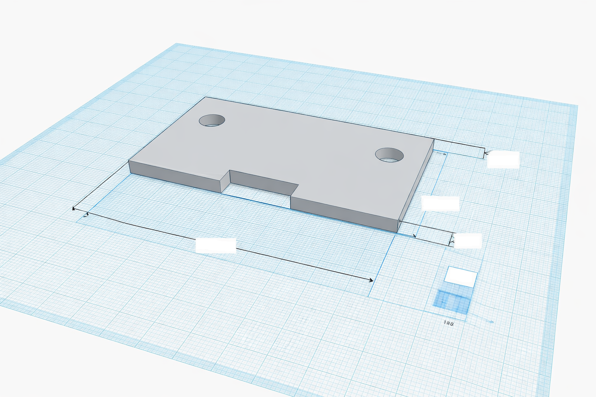
Vous n'êtes pas obligé de faire la même chose, faites en fonction de votre design.
2. Rendu numérique (5 min)
- Créer un document LibreOffice Writer.
- Nommez le "4e_S27_nom1_nom2" (pas de prénom)
-
Ouvrez le document et y mettre OBLIGATOIREMENT les informations suivantes:
- Séance 27 : Modéliser les pièces de la mini-serre
- Nom et prénom des membres du groupe
- Seulement après avoir fait cela, vous pouvez continuer.
- Prenez un screen de la vue de face (avec l'encoche)
- Mettez le dans votre document avec comme légende: "Vue de face"
- Prenez un screen de la vue de dessus
- Mettez le dans votre document avec comme légende: "Vue de dessus"
-
Copiez le tableau suivant:
Ce tableau vous aide à garder une trace de ce que vous faites, et pourquoi vous le faites.Élément Dimension Pourquoi c’est important Base Longueur: 120mm x Largeur : 80mm x Hauteur : 3mm stabilité et place disponible Trous Ø (diamètre) 6mm fixation / passage collier Encoche Longueur : 20mm x largeur : 8mm passage d’un câble - Enregistrez le travail dans le dossier de partage
À copier à la main
Aujourd’hui, nous avons découvert la modélisation 3D avec Tinkercad.
Nous avons appris à nous repérer dans un espace 3D, à créer une forme simple, à régler ses dimensions en millimètres et à utiliser un “trou” pour enlever de la matière.
Nous avons modélisé un socle utile pour la mini-serre connectée, puis nous avons enregistré et partagé notre travail.
La modélisation 3D permet de concevoir et vérifier une pièce avant de la fabriquer.
Séance 28 : Contraintes dimensionnelles et assemblage
Thème : Création, conception, réalisation, innovations technologiques
Compétence visée : Concevoir et représenter une solution technique (modélisation 3D)
Objectifs d’apprentissage-
Ce que les élèves vont apprendre (connaissances) :
- Une pièce 3D se construit à partir de formes simples (solides) qu’on dimensionne, positionne et assemble.
- En modélisation, on doit respecter des contraintes : dimensions, épaisseur, emboîtement, passage des câbles, stabilité.
- Un objet fabriqué (impression 3D) a besoin de règles simples : épaisseur minimale, trous, ajustements.
-
Ce qu’ils vont apprendre à faire (capacités) :
- Utiliser Tinkercad pour créer une pièce avec des cotes précises.
- Réaliser un assemblage simple (ajout / alignement / groupement).
- Produire et rendre un fichier 3D (lien Tinkercad + export STL) + captures d’écran.
Pourquoi ce cours
Pour fabriquer (ou préparer à fabriquer) une mini-serre, il faut des pièces qui s’emboîtent et qui respectent des dimensions réelles. La modélisation 3D permet de passer de l’idée à une pièce précise, testable et améliorable.
Mise en route (5 min)
Aujourd’hui, vous modélisez une pièce utile de la mini-serre, avec des dimensions précises.
Objectif de l’heure : une pièce simple, propre, et mesurée (pas besoin de faire “beau”, besoin de faire “juste”).
Consignes de modélisation (5 min)
Pièce à modéliser aujourd’hui : le socle (plateau) de la mini-serre.
C’est la pièce la plus simple et la plus utile : elle sert de base, et on peut ensuite y ajouter parois/couvercle.
-
Dimensions conseillées :
- Plateau : 118 mm x 78 mm
- Épaisseur : 3 mm
Travail sur Tinkercad (30 min)
- Créer un document LibreOffice Writer.
- Nommez le "4e_S28_nom1_nom2" (pas de prénom)
-
Ouvrez le document et y mettre OBLIGATOIREMENT les informations suivantes:
- Séance 28 : Contraintes dimensionnelles et assemblage
- Nom et prénom des membres du groupe
- Seulement après avoir fait cela, vous pouvez continuer.
-
Étape A — Créer le cadre (rebords) (12 min)
-
Objectif : faire un “cadre” autour du plateau (pour tenir les parois).
- Glisser une nouvelle Box
-
Mettre :
- L = 118
- l = 78
- h = 100
- Dupliquer cette box (CTRL+D)
-
Sur la copie :
- passer en Hole (trou)
-
mettre :
- L = 116
- l = 76
- h = 100
-
Sélectionner les 2 formes → Aligner (outil “Align”)
- centrer sur X et Y
- Sélectionner les 2 → Group
- Renommer : Cadre
-
Étape B — Poser le cadre sur le plateau (5 min)
- Mettre le cadre au-dessus du plateau
- Sélectionner plateau + cadre → Aligner
-
Vérifier que le cadre est bien “posé” (hauteur) :
- le plateau fait 3 mm
- le cadre commence au-dessus du plateau (ou tu peux les fusionner)
- Sélectionner le tout → Group (si tu veux une pièce unique)
-
Étape C — Faire le trou pour les cables (5 min)
- Mettre un bloc en mode perçage
-
Dimensions:
- longueur : 20mm
- largeur : 3mm
- hauteur : 10mm
- Sélectionner le cadre → Aligner
- Aligner au milieu du mur face (celui ou se trouve le trou de la base)
- Sélectionner le tout → Group
Contrôle qualité + rendu (10 min)
-
Check-list à faire AVANT de rendre (2 min)
- Les dimensions du plateau sont correctes (120 x 80 x 3)
- Il y a un cadre (rebords) de 10 mm
- Il y a 2 trous (6 mm) visibles
- Les objets sont groupés (si demandé)
-
Dans votre document, ajoutez:
- Lien Tinkercad
-
2 captures d’écran
- Vue de dessus
- Vue en perspective isométrique (en diagonal, vue de dessus/face/côté, de façon a voir toute la pièce modélisée)
-
Copier le tableau suivant (avec vos valeurs si différentes):
Élément Valeur Nom de la pièce Socle (plateau + rebords) Dimensions 120 x 80 x 13 (au total) Rôle Base de la mini-serre, support des parois + passage des câbles
À copier à la main
Aujourd’hui, nous avons modélisé une pièce de la mini-serre connectée sur Tinkercad.
Nous avons appris à créer des formes simples, à saisir des dimensions précises et à assembler des éléments (aligner, percer, grouper).
Nous avons réalisé un socle avec un plateau, des rebords et des trous pour le passage de câbles.
La modélisation 3D permet de représenter une solution technique avant de la fabriquer et de vérifier qu’elle respecte les contraintes.
Séance 30 : Modélisation de la base de la serre
Thème : Création, conception, réalisation, innovations technologiques
Compétence visée : Concevoir et représenter une solution technique (modélisation 3D)
Objectifs d’apprentissage-
Ce que les élèves vont apprendre (connaissances) :
- Une pièce 3D se construit à partir de formes simples (solides) qu’on dimensionne, positionne et assemble.
- En modélisation, on doit respecter des contraintes : dimensions, épaisseur, emboîtement, passage des câbles, stabilité.
- Un objet fabriqué (impression 3D) a besoin de règles simples : épaisseur minimale, trous, ajustements.
-
Ce qu’ils vont apprendre à faire (capacités) :
- Utiliser Tinkercad pour créer une pièce avec des cotes précises.
- Réaliser un assemblage simple (ajout / alignement / groupement).
- Produire et rendre un fichier 3D (lien Tinkercad + export STL) + captures d’écran.
Pourquoi ce cours
Vous savez modéliser une pièce simple, mais pour faire une mini-serre, il faut modéliser plusieurs pièces qui s’assemblent : socle, parois, toit, ouvertures. Aujourd’hui, on modélise la base de la serre (socle) en respectant les dimensions et les contraintes du cahier des charges.
Let's GO !!!!!
- Créer un document LibreOffice Writer.
- Nommez le "4e_S30_nom1_nom2" (pas de prénom)
-
Ouvrez le document et y mettre OBLIGATOIREMENT les informations suivantes:
- Séance 30 : Modélisation de la base de la serre
- Nom et prénom des membres du groupe
- Seulement après avoir fait cela, vous pouvez continuer.
-
Modéliser la base (le socle qui fera tenir votre mini-serre) en respectant les contraintes suivantes :
- Dimensions conseillées :
- Longueur : 120 mm (12 cm)
- Largeur : 80 mm (8 cm)
- Prendre un screen de votre travail et le mettre dans votre document avec comme légende: "Mini-serre : Base"
- Ajouter des trous pour permettre, éventuellement, de visser la serre sur un support (ex : un table ou planche en bois)
- Pour ce faire, nous allons utiliser des vis à bois
- Nous prendrons un modèle de vis à bois standard (ex : vis entre 4 et 5 mm de diamètre et entre 50 et 60 mm de longueur)
- Il va donc falloir créer des trous de 4 à 5 mm de diamètre à l’intérieur du socle, à des endroits stratégiques (ex : coins du socle)
- Vous ne pouvez pas placer des trous trop proches les uns des autres (minimum 20 mm entre les centres des trous)
- Vous ne pouvez pas placer des trous trop proche des bords de votre socle (risque de casser)
- Adapter la hauteur de votre base
- Prendre un screen de votre travail et le mettre dans votre document avec comme légende: "Mini-serre : Base + trous"
- Déposer votre document dans le dossier partagé de votre classe (CDC/Ma Classe/Espace d'échange/Techno)
Exemple de base modélisée (vous n’êtes pas obligé de faire exactement la même chose, faites en fonction de votre design) :
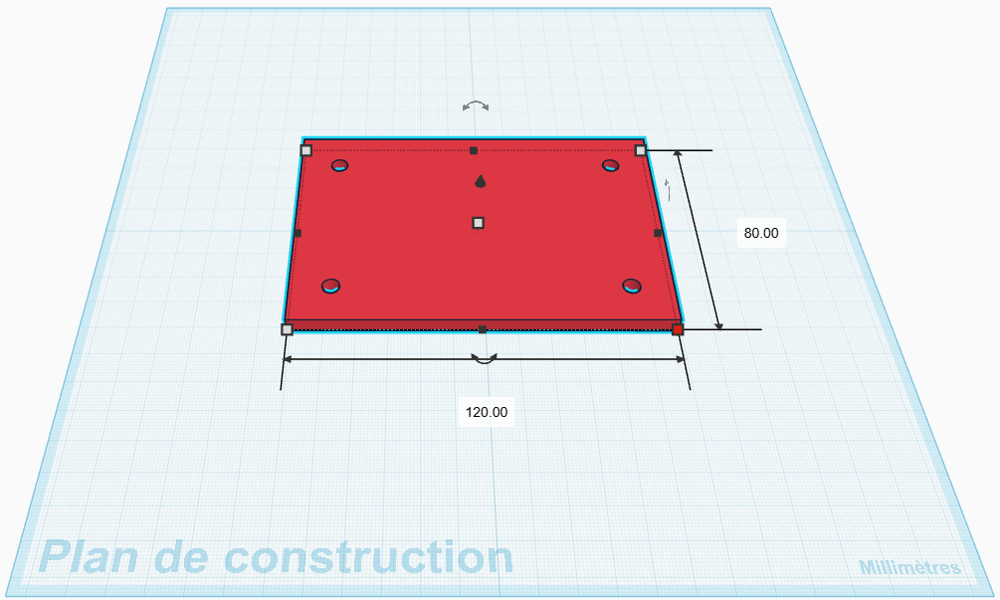
Écrire à la main
Sur une feuille, écrivez à la main, en quelques lignes, ce que vous avez fait aujourd’hui, et ce que vous avez appris.
Séance 31 : Modélisation des murs et des fenêtres de la serre
Thème : Création, conception, réalisation, innovations technologiques
Compétence visée : Concevoir et représenter une solution technique (modélisation 3D)
Objectifs d’apprentissage-
Ce que les élèves vont apprendre (connaissances) :
- Une pièce 3D se construit à partir de formes simples (solides) qu’on dimensionne, positionne et assemble.
- En modélisation, on doit respecter des contraintes : dimensions, épaisseur, emboîtement, passage des câbles, stabilité.
- Un objet fabriqué (impression 3D) a besoin de règles simples : épaisseur minimale, trous, ajustements.
-
Ce qu’ils vont apprendre à faire (capacités) :
- Utiliser Tinkercad pour créer une pièce avec des cotes précises.
- Réaliser un assemblage simple (ajout / alignement / groupement).
- Produire et rendre un fichier 3D (lien Tinkercad + export STL) + captures d’écran.
Pourquoi ce cours
Vous savez modéliser une pièce simple, mais pour faire une mini-serre, il faut modéliser plusieurs pièces qui s’assemblent : socle, parois, toit, ouvertures. Aujourd’hui, on modélise les murs et les fenêtres de la serre en respectant les dimensions et les contraintes du cahier des charges.
Let's GO !!!!!
- Créer un document LibreOffice Writer.
- Nommez le "4e_S31_nom1_nom2" (pas de prénom)
-
Ouvrez le document et y mettre OBLIGATOIREMENT les informations suivantes:
- Séance 31 : Modélisation des murs et des fenêtres de la serre
- Nom et prénom des membres du groupe
- Seulement après avoir fait cela, vous pouvez continuer.
-
Modéliser les murs et les fenêtres de la serre en respectant les contraintes suivantes :
- Dimensions conseillées :
- Longueur : 118 mm (11,8 cm)
- Hauteur : 103 mm (10,3 cm)
- Épaisseur : entre 2 et 3 mm (0,2 / 0,3 cm)
- Créez un nouveau modèle, nous n'allons pas faire les murs sur un autre projet, que nous réunirons avec la base plus tard
- Par simplicité d'impression, mais aussi par praticité, il est conseillé de faire des murs qui, plus tard, s'emboitent ensemble, plutôt que des murs simples déjà relié ensemble (mais c'est vous qui voyez)
- Prendre un screen de votre travail et le mettre dans votre document avec comme légende: "Mini-serre : Murs"
- Ajouter des fenêtres fixent (qui ne peuvent pas être ouvertes).
- Elles serviront à voir a travers la serre pour surveiller notre plante.
- Elles serviront aussi à aérer la serre (si on les ouvre, plus tard dans le projet)
- Il faut faire des trous dans les murs pour faire les fenêtres (pas besoin de faire des vitres, on peut laisser les trous vides)
- Les fenêtres doivent être assez grandes pour voir la plante (ex : 48,5 mm de longueur x 38,5 mm de hauteur)
- Mettez en autant que vous le souhaitez (selon votre design)
- Prendre un screen de votre travail et le mettre dans votre document avec comme légende: "Mini-serre : Murs + fenêtres"
- Déposer votre document dans le dossier partagé de votre classe (CDC/Ma Classe/Espace d'échange/Techno)
Exemple de murs et fenêtres modélisés (vous n’êtes pas obligé de faire exactement la même chose, faites en fonction de votre design) :
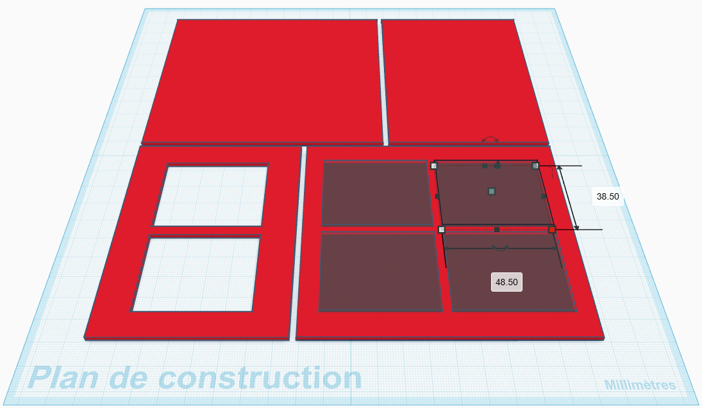
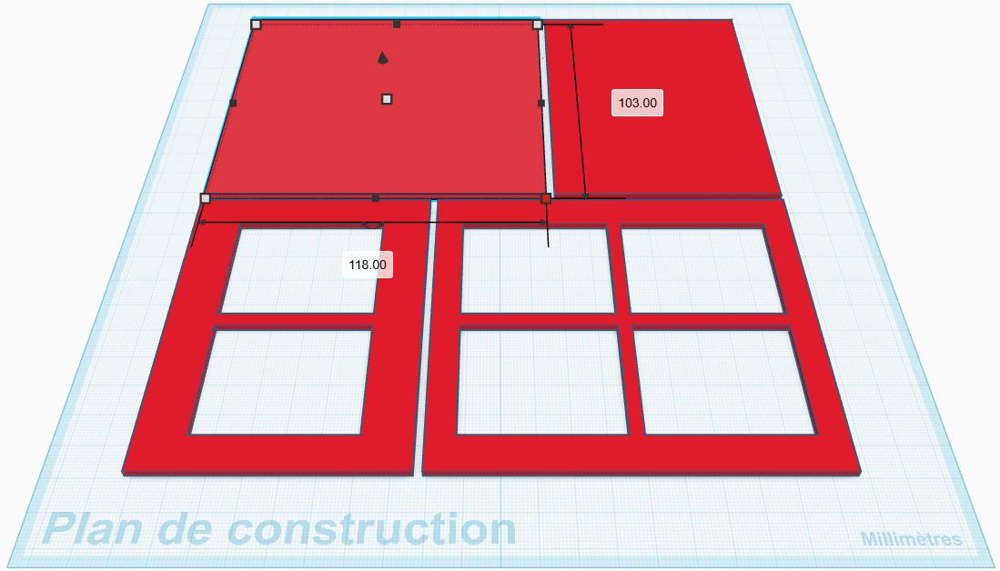
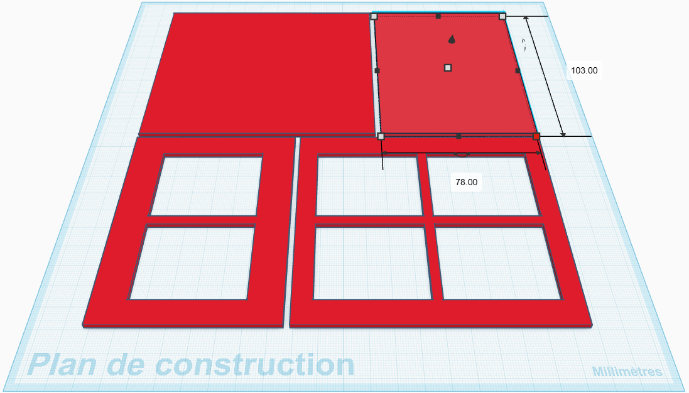
Écrire à la main
Sur une feuille, écrivez à la main, en quelques lignes, ce que vous avez fait aujourd’hui, et ce que vous avez appris.
Séance 32 : Modélisation des rainures d’assemblage de la serre
Thème : Création, conception, réalisation, innovations technologiques
Compétence visée : Concevoir et représenter une solution technique (modélisation 3D)
Objectifs d’apprentissage-
Ce que les élèves vont apprendre (connaissances) :
- Une pièce 3D se construit à partir de formes simples (solides) qu’on dimensionne, positionne et assemble.
- En modélisation, on doit respecter des contraintes : dimensions, épaisseur, emboîtement, passage des câbles, stabilité.
- Un objet fabriqué (impression 3D) a besoin de règles simples : épaisseur minimale, trous, ajustements.
-
Ce qu’ils vont apprendre à faire (capacités) :
- Utiliser Tinkercad pour créer une pièce avec des cotes précises.
- Réaliser un assemblage simple (ajout / alignement / groupement).
- Produire et rendre un fichier 3D (lien Tinkercad + export STL) + captures d’écran.
Pourquoi ce cours
Vous savez modéliser une pièce simple, mais pour faire une mini-serre, il faut modéliser plusieurs pièces qui s’assemblent : socle, parois, toit, ouvertures. Aujourd’hui, on modélise les rainures (murs et base) qui permettront d’assembler les différentes pièces de la serre en respectant les dimensions et les contraintes du cahier des charges.
Let's GO !!!!!
- Créer un document LibreOffice Writer.
- Nommez le "4e_S32_nom1_nom2" (pas de prénom)
-
Ouvrez le document et y mettre OBLIGATOIREMENT les informations suivantes:
- Séance 32 : Modélisation des rainures d’assemblage de la serre
- Nom et prénom des membres du groupe
- Seulement après avoir fait cela, vous pouvez continuer.
-
Modéliser les murs et les fenêtres de la serre en respectant les contraintes suivantes :
- Dimensions conseillées :
- jeu : ~0.25 / ~0.5 mm (0.25 à 0.5 cm)
- Si vous avez fait des murs qui s'emboitent, très bien, vous allez maintenant faire les rainures d’assemblage (c’est-à-dire les parties qui permettent de faire un emboîtement entre les murs).
- Faites des rainures de 0,25 / 0,5 mm de largeur, par rapport aux dimensions de vos murs (selon votre design)
- Si votre mur fait 2 mm d'épaisseur, il faudra faire des rainures de 2.25 mm / 2.5 mm
- Rappelez-vous, en mécanique, c'est ce qu'on appel le "jeu" (c'est-à-dire l'espace entre deux pièces qui s'emboîtent)
- Prendre un screen de votre travail et le mettre dans votre document avec comme légende: "Mini-serre : Murs + rainures"
- Faites la même chôse pour la base (le socle) en gardant le même jeu que pour les murs
- Prendre un screen de votre travail et le mettre dans votre document avec comme légende: "Mini-serre : Base + rainures"
- Déposer votre document dans le dossier partagé de votre classe (CDC/Ma Classe/Espace d'échange/Techno)
Exemple de murs et fenêtres rainurés (vous n’êtes pas obligé de faire exactement la même chose, faites en fonction de votre design) :
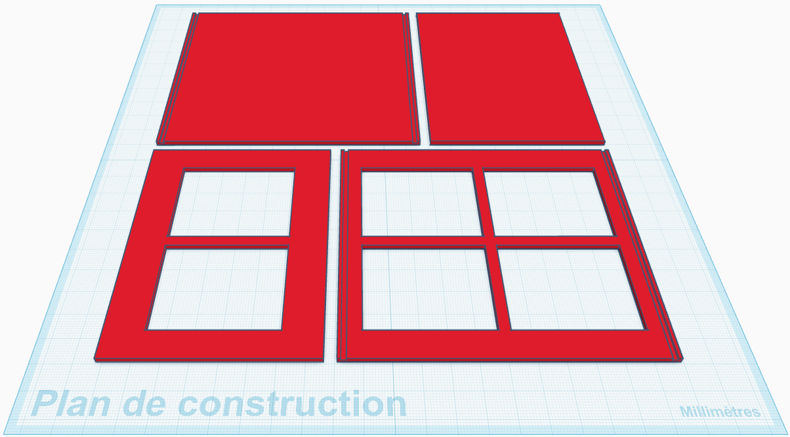
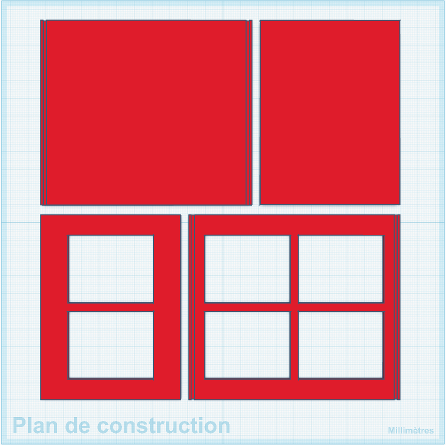
Exemple de base rainuré (vous n’êtes pas obligé de faire exactement la même chose, faites en fonction de votre design) :
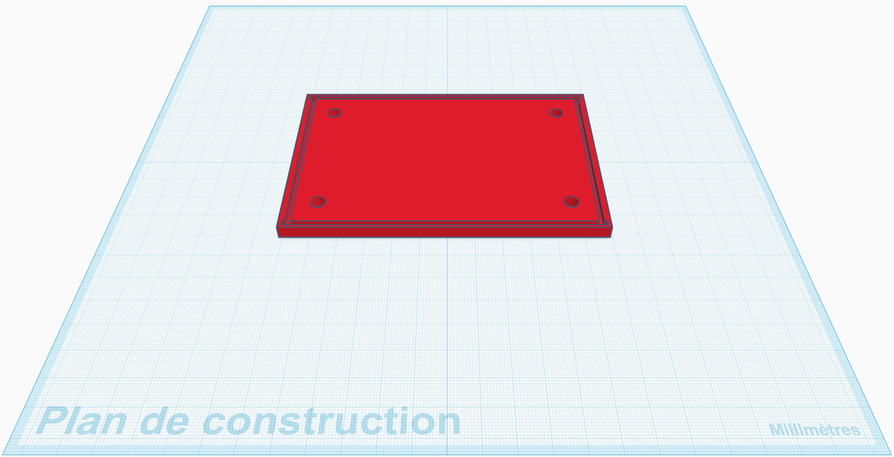
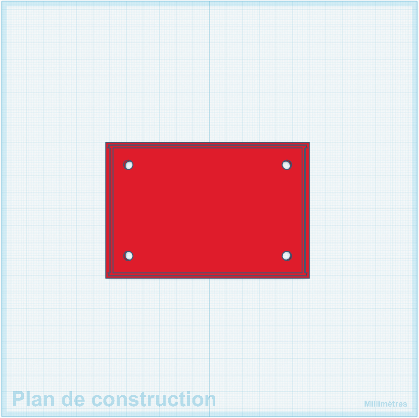
Écrire à la main
Sur une feuille, écrivez à la main, en quelques lignes, ce que vous avez fait aujourd’hui, et ce que vous avez appris.
Séance 33 : Premier assemblage (virtuel) des pièces et modifications
Thème : Création, conception, réalisation, innovations technologiques
Compétence visée : Concevoir et représenter une solution technique (modélisation 3D)
Objectifs d’apprentissage-
Ce que les élèves vont apprendre (connaissances) :
- Une pièce 3D se construit à partir de formes simples (solides) qu’on dimensionne, positionne et assemble.
- En modélisation, on doit respecter des contraintes : dimensions, épaisseur, emboîtement, passage des câbles, stabilité.
- Un objet fabriqué (impression 3D) a besoin de règles simples : épaisseur minimale, trous, ajustements.
-
Ce qu’ils vont apprendre à faire (capacités) :
- Utiliser Tinkercad pour créer une pièce avec des cotes précises.
- Réaliser un assemblage simple (ajout / alignement / groupement).
- Produire et rendre un fichier 3D (lien Tinkercad + export STL) + captures d’écran.
Pourquoi ce cours
Vous savez modéliser une pièce simple, mais pour faire une mini-serre, il faut modéliser plusieurs pièces qui s’assemblent : socle, parois, toit, ouvertures. Aujourd’hui, on assemble virtuellement nos différentes pièces, on vérifie que tout s’emboîte bien et on fait les modifications nécessaires.
Let's GO !!!!!
- Créer un document LibreOffice Writer.
- Nommez le "4e_S33_nom1_nom2" (pas de prénom)
-
Ouvrez le document et y mettre OBLIGATOIREMENT les informations suivantes:
- Séance 33 : Premier assemblage (virtuel) des pièces et modifications
- Nom et prénom des membres du groupe
- Seulement après avoir fait cela, vous pouvez continuer.
- Vous allez assembler vos pièces dans Tinkercad (ajout / alignement / groupement)
- Pour ce faire, vous allez créer une troisième conception 3D et copier/coller toutes vos pièces précédentes dans la nouvelle conception
- Assemblez vos pièces dans cette nouvelle conception
- Vérifiez que tout s’emboîte bien (vous devriez avoir un léger jeu entre les pièces) et faites les modifications nécessaires
- Zoomez sur vos rainures afin d'être sur que les pièces s’emboîtent correctement
- Prendre un screen de votre travail et le mettre dans votre document avec comme légende: "Mini-serre : premier assemblage"
- Prendre un screen de vos rainures et le mettre dans votre document avec comme légende: "Mini-serre : vérification rainures"
- S'il vous reste du temps, vous pouvez améliorer votre design (ajouter des détails, modifier les dimensions, etc.)
- Si vous faites des modifications, prenez un screen de votre travail modifié et le mettre dans votre document avec comme légende: "Mini-serre : modification du design du ../../.... (la date du jour)"
- Déposer votre document dans le dossier partagé de votre classe (CDC/Ma Classe/Espace d'échange/Techno)
Exemple d'assemblage (vous n’êtes pas obligé de faire exactement la même chose, faites en fonction de votre design) :
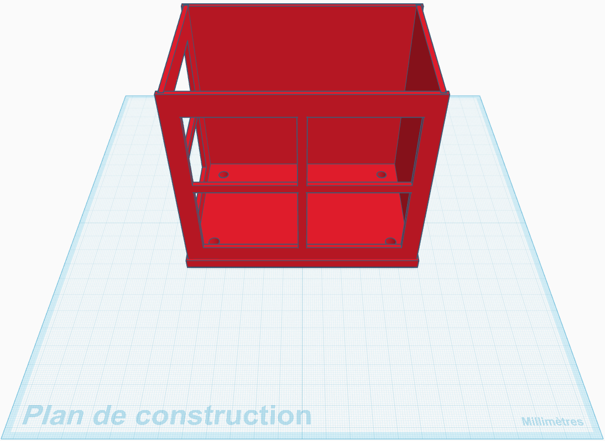
Exemple de rainures qui semble bonne (il reste un peu de jeu, les pièces ne se chevauchent pas) (vous n’êtes pas obligé de faire exactement la même chose, faites en fonction de votre design) :
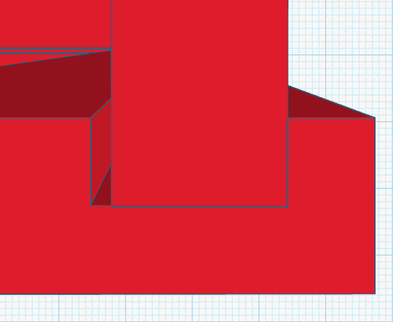
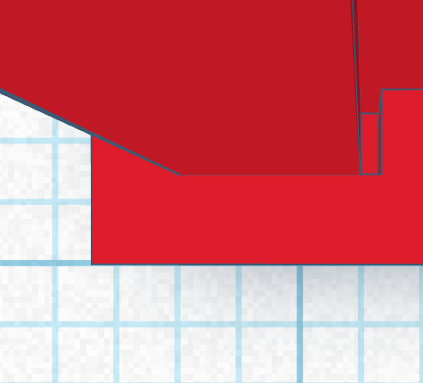
Exemple de modification rendant le design plus agréable et plus travaillé (il reste un peu de jeu, les pièces ne se chevauchent pas) (vous n’êtes pas obligé de faire exactement la même chose, faites en fonction de votre design) :
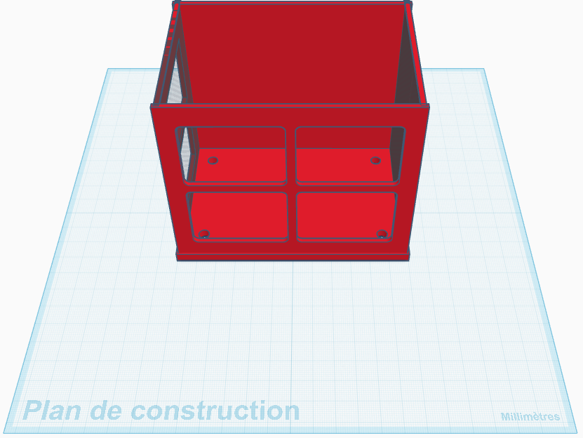
Écrire à la main
Sur une feuille, écrivez à la main, en quelques lignes, ce que vous avez fait aujourd’hui, et ce que vous avez appris.
Séance 34 : Qu’est-ce que l’IA
Télécharger le cours : Qu’est-ce que l’IASéance 35 : Bien utiliser l’IA
Télécharger le cours : Bien utiliser l’IASéance 36 : Faire un bon prompt
Télécharger le cours : Faire un bon promptSéance 37 : Entrainement utilisation IA
Propose ton meilleur prompt !
En vous servant des cours précédents, proposez votre meilleur prompt pour faire une recherche sur internet, ou pour faire une demande à une IA (ex : ChatGPT). Vous allez devoir refaire le prompt de chacun des prompts faibles suivants pour les améliorer, et expliquer pourquoi votre nouvelle version est meilleure que l’ancienne.
- Avant de commencer
- créez un fichier Writer
- Nommez le : "4e_S37_Nom1_Nom2_Prompts.odt"
- Enregistrez-le dans CDC\ma classe\espace d'échange\techno\S37
- Mettre OBLIGATOIREMENT les informations suivantes dans le fichier avant de commencer à faire les prompts:
- Séance 37 : Entrainement utilisation IA
- Nom et prénom des membres du groupe
- SEULEMENT après avoir fait cela, vous pourrez commencer
-
Prompts faibles devant être amélioré:
- « Explique le Web. »
- « Fais un résumé. »
- « Écris un texte sur le cloud. »
- « Aide-moi en photo numérique. »
- « Parle-moi de l’IA. »
-
Consigne pour améliorer les prompts:
- Dire ce qui ne va pas
- L’améliorer
- Expliquer pourquoi la nouvelle version est meilleure
Séance 38 : Séance libre avant les vacances
Séance 39 : Données de la serre : organiser, nommer et retrouver ses fichiers
Thème 3 : Création, conception, réalisation, innovations technologiques (projet mini-serre connectée)
Compétence visée : Usages du numérique / gestion de l’information : organiser et conserver des données et des documents de projet (fichiers, dossiers, formats)
Objectifs d’apprentissage-
Ce que les élèves vont apprendre (connaissances) :
- Un fichier a un nom, une extension (format) et une taille.
- Une arborescence (dossiers/sous-dossiers) sert à classer et retrouver rapidement le travail.
-
Certains formats sont adaptés à certains usages :
- .docx / .odt : document texte (compte-rendu)
- .pdf : document “figé” (rendu final)
- .png / .jpg : image (capture, photo)
- .csv / .ods / .xlsx : données/tableur (mesures)
- Des tailles de fichiers différentes ont un impact sur le stockage et le partage (ENT, mail, cloud).
-
Ce qu’ils vont apprendre à faire (capacités) :
- Créer une arborescence de projet claire (dossiers + sous-dossiers).
- Nommer correctement des fichiers avec une convention commune.
- Faire une capture d’écran, l’enregistrer au bon format, au bon endroit.
- Relever taille et extension d’un fichier.
- Produire et rendre un document de synthèse (1 page) prouvant que l’organisation est maîtrisée.
Pourquoi ce cours
Parce qu’un projet (comme la mini-serre) produit vite beaucoup de documents : captures de programmes, schémas, mesures, comptes-rendus… Si les fichiers sont mal rangés ou mal nommés, on perd du temps, on rend n’importe quoi, et on ne sait plus retrouver son travail. Aujourd’hui, on met en place une organisation standard pour toute la fin d’année.
1) Lancement + objectif + consigne de rendu
“Aujourd’hui : on organise le dossier du projet serre et on prouve qu’on sait retrouver nos fichiers.” Livrable à rendre en fin d’heure : un document 1 page Nom1_Nom2_Serre_Fichiers.pdf (ou .docx) avec captures + tableau.
2) Création de l’arborescence
Dans Documents, créee le dossier principal et nommez le "Projet_Serre_4e"
-
À l’intérieur, créer exactement ces sous-dossiers :
- 01_Documents
- 02_Images
- 03_Programmes
- 04_Donnees_CSV
- 05_Rendus
3) Nommage standard : la règle commune
Nom de fichier = Classe_Nom1_Nom2_Sxx_TitreCourt_V1.ext
-
Exemples :
- 4e_Dupont_Martin_SA_Organisation_V1.docx
- 4e_Dupont_Martin_S32_ProgrammeSerre_V1.png
- 4e_Dupont_Martin_SA_TaillesFichiers_V1.csv
4) Production guidée : créer 3 fichiers de 3 types différents
-
Chaque binôme doit créer et ranger correctement :
-
A. Un document texte (Writer)
- Ouvrir Writer
- Titre : “Projet Serre — Organisation des fichiers”
- Enregistrer dans 01_Documents avec le nom :
- 4e_S39_Nom1_Nom2_SA_Organisation_V1.odt
-
B. Une image (capture d’écran)
- Faire une capture de l’arborescence (explorateur de fichiers affiché)
- Enregistrer l’image dans 02_Images :
- 4e_S39_Nom1_Nom2_SA_Arborescence_V1.png
-
C. Un fichier de données
- Ouvrir un tableur (Calc)
-
Créer un mini tableau de 5 lignes “Mesures fictives” :
minute temperature 0 21 1 22 2 22 3 23 4 23 - Exporter / enregistrer en CSV dans 04_Donnees_CSV :
- 4e_S39_Nom1_Nom2_SA_MesuresTest_V1.csv
5) Observer : extension + taille + usage
Dans le document texte (A), ajoutez le tableau :
| Nom du fichier | Extension | Taille (Ko/Mo) | À quoi ça sert dans le projet serre ? |
|---|---|---|---|
| (votre doc) | .docx/.odt | … | compte-rendu |
| (votre image) | .png | … | preuve / illustration |
| (votre CSV) | .csv | … | données à traiter |
6) Rendu
- Le document texte est complété puis exporté en PDF et placé dans : 05_Rendus (Nom du rendu : 4e_S39_Nom1_Nom2_SA_RenduFichiers_V1.pdf)
- Copier / Coller le PDF dans l'espace d'échange
À copier à la main
Aujourd’hui, nous avons appris à organiser le travail numérique du projet “mini-serre connectée”. Nous avons créé une arborescence de dossiers, appliqué une règle de nommage commune et produit plusieurs types de fichiers (document, image, données CSV). Nous avons appris à repérer l’extension, le format et la taille d’un fichier, et à choisir le bon type de fichier selon l’usage. Cette organisation permet de retrouver rapidement notre travail et de rendre un projet propre et complet.
Séance 40 : Mesurer pour de vrai : protocole + collecte (prototype de serre non réalisé)
Thème 3 : Création, conception, réalisation, innovations technologiques (projet mini-serre connectée)
Compétence visée : Données issues d’un objet technique : acquérir, enregistrer et exploiter une série de mesures
Objectifs d’apprentissage-
Ce que les élèves vont apprendre (connaissances) :
- Un prototype peut être virtuel (modélisation 3D) ou réel : même sans serre fabriquée, on peut tester des choix grâce à des mesures.
- Un capteur mesure une grandeur physique (ici : température) et fournit une valeur numérique.
- Un protocole de mesure permet d’obtenir des données fiables (mêmes conditions, même durée, même intervalle).
- Une série de mesures doit être repérée (temps, minute, numéro de mesure) pour être exploitable.
- Une donnée peut être influencée par l’environnement (main, soleil, proximité d’un radiateur, courant d’air).
-
Ce qu’ils vont apprendre à faire (capacités) :
- Écrire un protocole simple de mesure (quoi, comment, combien de temps, à quel intervalle).
- Programmer la Micro:bit pour afficher des mesures de température à intervalles réguliers.
- Collecter une série de mesures (au moins 20 valeurs) et la recopier dans un tableau.
- Enregistrer la série de mesures dans un fichier (tableur) qui servira aux séances suivantes.
- Expliquer en quelques phrases comment ces mesures aideront à choisir un seuil de “surchauffe” pour la future serre.
Pourquoi ce cours
Notre serre connectée est pour l’instant un prototype virtuel (modélisation 3D). Pourtant, pour la programmer correctement, il faut des données réelles : température, lumière, humidité… Aujourd’hui, on commence par la température (capteur intégré à la Micro:bit). Les mesures collectées serviront ensuite à construire un fichier CSV, faire des calculs (moyenne, min, max), tracer un graphique et choisir un seuil d’alerte réaliste, comme si la Micro:bit était intégrée dans la serre.
1) Lancement + consigne de rendu
Objectif du jour : récolter une série de mesures de température avec un protocole clair,
pour pouvoir ensuite programmer un seuil adapté à la future serre.
Livrables à rendre :
- Un document texte (1 page) : protocole + tableau de mesures + remarque(s) sur les conditions de mesure + phrase “à quoi ça sert pour la serre ?”.
- Un fichier tableur (Calc) contenant la série de mesures.
2) Écrire le protocole de mesure
Dans un document texte (Writer), chaque binôme rédige un protocole simple en répondant à ces 5 questions :
- Quelle grandeur mesure-t-on ?
- Avec quel capteur ?
- Combien de mesures ?
- À quel intervalle ?
- Dans quelles conditions ?
Nom du document : 4e_S40_Nom1_Nom2_Protocole_V1.odt (à enregistrer dans 01_Documents)
3) Programmer la Micro:bit pour mesurer
Sur MakeCode, créer un projet : Serre_MesuresTemp. Puis réaliser le programme suivant (blocs) :
- Créer une variable : temp
- Dans toujours :
- mettre temp = température (°C)
- afficher temp
- pause 10000 ms (10 secondes)
Télécharger sur la Micro:bit et vérifier que la température s’affiche.
Important : Ne pas toucher la carte pendant la série “table” (sinon la température monte).
4) Collecte des données
Chaque binôme réalise 2 séries (pour comparer et simuler une situation “normale” et une “hausse”) :
- Série A : “température normale” (Micro:bit posée, sans toucher) : 10 mesures
- Série B : “température augmentée” (main proche / tenir brièvement) : 10 mesures
Remplir le tableau dans votre document texte :
| Mesure n° | Série A (normale) en °C | Série B (augmentée) en °C |
|---|---|---|
| 1 | … | … |
| 2 | … | … |
| 3 | … | … |
| 4 | … | … |
| 5 | … | … |
| 6 | … | … |
| 7 | … | … |
| 8 | … | … |
| 9 | … | … |
| 10 | … | … |
À écrire dans le document (2 phrases minimum) :
- Pourquoi la série B est généralement plus élevée ?
- Comment ces mesures vont aider à choisir un seuil d’alerte (ex : “si T > … alors alerte”) dans le futur programme de la serre ?
5) Enregistrer la série dans un tableur (Calc)
Ouvrir Calc, recopier le tableau sous forme de colonnes :
- colonne A : mesure
- colonne B : temp_normale
- colonne C : temp_augmentee
Enregistrer dans 04_Donnees_CSV :
4e_S40_Nom1_Nom2_MesuresTemp_V1.ods
6) Rendu
- Document texte complété (protocole + tableau + explication) → export PDF → déposer dans 05_Rendus
- Fichier tableur .ods enregistré dans 04_Donnees_CSV
- Nom du PDF :
4e_S40_Nom1_Nom2_RenduProtocoleMesures_V1.pdf - Copier / Coller le PDF dans l'espace d'échange
À copier à la main
Aujourd’hui, nous avons mesuré la température avec la carte Micro:bit pour obtenir des données réelles, même si la serre n’est pas encore fabriquée. Nous avons écrit un protocole de mesure (conditions, intervalle, nombre de mesures) et collecté deux séries de valeurs (température normale et température augmentée). Nous avons compris que l’environnement influence une mesure et qu’une série de données doit être organisée pour être exploitée dans un tableur. Ces mesures serviront à choisir un seuil d’alerte et à programmer le comportement de la future serre connectée.
Séance 41 : Créer une table de données exploitable (structurer)
Thème 3 : Création, conception, réalisation, innovations technologiques (projet mini-serre connectée)
Compétence visée : Structuration des données : organiser une table de données exploitable (en-têtes, unités, types, valeurs manquantes)
Objectifs d’apprentissage-
Ce que les élèves vont apprendre (connaissances) :
- Une table de données exploitable contient des en-têtes clairs (noms de colonnes) et des unités.
- Une donnée doit avoir un type : nombre (température), texte (commentaire), booléen (vrai/faux).
- Une table exploitable évite les erreurs : pas de mélange d’unités, pas de cellules fusionnées, pas de texte à la place d’un nombre.
- Les valeurs manquantes doivent être gérées (laisser vide ou écrire “NA” selon la consigne, sans inventer).
-
Ce qu’ils vont apprendre à faire (capacités) :
- Ouvrir un fichier tableur contenant des mesures et le mettre en forme correctement.
- Créer des en-têtes normalisés (nom + unité) et vérifier que les colonnes contiennent le bon type de données.
- Repérer et corriger des erreurs courantes (texte au lieu de nombre, colonnes mal nommées, données incomplètes).
- Produire une version “propre” de la table, prête à être exportée en CSV et analysée.
Pourquoi ce cours
Dans les prochaines séances, nous allons trier, filtrer, calculer et faire des graphiques à partir de nos mesures. Si la table de données est mal construite, les calculs seront faux ou impossibles. Aujourd’hui, nous transformons nos mesures en une table exploitable : claire, propre, et prête pour l’analyse.
1) Lancement + consigne de rendu
Objectif du jour : rendre votre table de données exploitable.
Livrables à rendre :
- Un fichier tableur “propre” (version V2)
- Une capture d’écran de la table propre + une mini-checklist remplie (dans un document texte)
2) Ouvrir et vérifier la table
Ouvrir le fichier de mesures (séance 40) dans Calc. Vérifier les points suivants :
- Les colonnes sont-elles bien séparées ? (pas de données dans une seule colonne)
- Les valeurs sont-elles des nombres (pas “23°C”, pas de texte) ?
- Les lignes correspondent-elles à des mesures (1 ligne = 1 mesure) ?
3) Standardiser les en-têtes et les unités
En ligne 1, remplacer les titres par les en-têtes suivants (obligatoires) :
- Colonne A : mesure (entier)
- Colonne B : temp_normale_C (nombre)
- Colonne C : temp_augmentee_C (nombre)
Consigne importante : on met l’unité dans le nom de colonne (ici : _C), et on ne met pas “°C” dans les cellules.
4) Ajouter une colonne “commentaire” (type texte)
Ajouter une colonne D : commentaire (texte).
Renseigner au moins 2 lignes :
- Une remarque sur une mesure “normale” (ex : “Micro:bit posée sur la table”)
- Une remarque sur une mesure “augmentée” (ex : “main proche / tenue 10 s”)
Objectif : montrer que certaines données sont des nombres et d’autres du texte.
5) Gestion des valeurs manquantes + contrôle final
Si une mesure manque, ne pas inventer :
- Laisser la cellule vide ou écrire NA (au choix de la classe, mais tout le monde doit faire pareil).
Puis faire le contrôle final avec la checklist :
| Point à vérifier | OK ? |
|---|---|
| En-têtes corrects (mesure / temp_normale_C / temp_augmentee_C / commentaire) | □ Oui / □ Non |
| Colonnes de température = nombres (pas de “°C” dans les cellules) | □ Oui / □ Non |
| 1 ligne = 1 mesure | □ Oui / □ Non |
| Valeurs manquantes gérées (vide ou NA, sans inventer) | □ Oui / □ Non |
| Fichier enregistré au bon endroit avec le bon nom | □ Oui / □ Non |
6) Enregistrer + rendu
- Enregistrer le tableur dans 04_Donnees_CSV :
4e_S41_Nom1_Nom2_MesuresTemp_TablePropre_V2.ods- Faire une capture d’écran de la table propre → enregistrer dans 02_Images :
4e_S41_Nom1_Nom2_CaptureTablePropre_V1.png- Créer un document texte (1/2 page) contenant la capture + la checklist complétée → exporter PDF → déposer dans 05_Rendus :
4e_S41_Nom1_Nom2_RenduTablePropre_V1.pdf- Copier / Coller le PDF dans l'espace d'échange
À copier à la main
Aujourd’hui, nous avons transformé nos mesures de température en une table de données exploitable. Nous avons appris qu’une table doit contenir des en-têtes clairs, des unités indiquées dans les noms de colonnes et des données du bon type (nombres pour les températures, texte pour les commentaires). Nous avons corrigé les erreurs et géré les valeurs manquantes. Cette table propre servira aux prochains traitements (tri, filtre, calculs et graphiques) pour programmer correctement la future serre connectée.
Séance 42 : CSV + tableur : importer, trier, filtrer
Thème 3 : Création, conception, réalisation, innovations technologiques (projet mini-serre connectée)
Compétence visée : Traitement des données : importer un fichier, trier, filtrer et préparer l’analyse
Objectifs d’apprentissage-
Ce que les élèves vont apprendre (connaissances) :
- Un fichier CSV est un fichier de données (table) lisible par un tableur.
- Un tableur permet de trier des données (ordre croissant/décroissant) et de filtrer (afficher seulement certaines lignes).
- Trier et filtrer permettent de repérer plus facilement des valeurs : minimum, maximum, valeurs “anormales”.
- Pour analyser des données, il faut partir d’une table propre (en-têtes corrects, unités, types).
-
Ce qu’ils vont apprendre à faire (capacités) :
- Exporter une table de données en CSV depuis Calc.
- Importer (ouvrir) un CSV dans Calc en vérifiant que les colonnes sont correctement séparées.
- Réaliser un tri sur une colonne de température (croissant et décroissant).
- Réaliser un filtre pour afficher uniquement certaines mesures (ex : température > 25°C).
- Produire une preuve du tri et du filtre (captures) + une conclusion simple.
Pourquoi ce cours
Pour programmer correctement un comportement (seuil d’alerte), il faut comprendre nos données. Aujourd’hui, on apprend à trier et filtrer une table de mesures : c’est une étape indispensable avant les calculs (moyenne, min, max) et avant de choisir un seuil réaliste pour la future serre connectée.
1) Lancement + consigne de rendu
Objectif du jour : transformer votre table propre en CSV, puis effectuer un tri et un filtre.
Livrables à rendre :
- Un fichier CSV exporté depuis votre table propre
- Deux captures : une preuve du tri + une preuve du filtre
- Un mini-document (1/2 page) avec les captures + 3 phrases de conclusion
2) Ouvrir la table propre (séance précédente)
Avant de commencer, créez un document : 4e_S42_Nom1_Nom2_RenduTriFiltre_V1.odt (Writer), en suite vous pourrez continuer.
Ouvrir dans Calc votre fichier :
4e_S41_Nom1_Nom2_MesuresTemp_TablePropre_V2.ods
Vérifier rapidement que la ligne 1 contient bien les en-têtes :
mesure / temp_normale_C / temp_augmentee_C / commentaire.
3) Exporter en CSV
Dans Calc :
- Fichier → Enregistrer sous
- Choisir le dossier : 04_Donnees_CSV
- Nom :
4e_S42_Nom1_Nom2_MesuresTemp_V1.csv - Type : Texte CSV (.csv)
- Valider les options CSV proposées (séparateur : virgule ou point-virgule selon réglage)
4) Tri : repérer les valeurs les plus faibles et les plus fortes
Réaliser 2 tris sur la colonne temp_normale_C :
- Tri croissant (du plus petit au plus grand)
- Tri décroissant (du plus grand au plus petit)
Noter dans le document texte :
- La plus petite valeur de temp_normale_C et la mesure correspondante
- La plus grande valeur de temp_normale_C et la mesure correspondante
5) Filtre : afficher seulement les températures au-dessus d’un seuil
Activer le filtre (Données → Filtre → Filtre automatique).
Sur la colonne temp_augmentee_C, appliquer un filtre :
- Afficher uniquement les lignes où temp_augmentee_C > 25 (ou un autre seuil donné par l’enseignant)
6) Rendu
- Enregistrer le CSV dans 04_Donnees_CSV :
4e_S42_Nom1_Nom2_MesuresTemp_V1.csv- Enregistrer 2 captures dans 02_Images :
4e_S42_Nom1_Nom2_CaptureTri_V1.png4e_S42_Nom1_Nom2_CaptureFiltre_V1.png- Créer un document texte contenant les 2 captures + 3 phrases de conclusion → exporter PDF → déposer dans 05_Rendus :
4e_S42_Nom1_Nom2_RenduTriFiltre_V1.pdf- Copier / Coller le PDF dans l'espace d'échange
À copier à la main
Aujourd’hui, nous avons appris à traiter une table de données avec un tableur. Nous avons exporté nos mesures au format CSV, puis réalisé des tris et des filtres pour repérer rapidement des valeurs importantes. Trier permet de trouver les valeurs minimum et maximum, et filtrer permet d’afficher uniquement les mesures répondant à une condition (ex : température > seuil). Ces traitements nous aideront à analyser les données et à choisir un seuil réaliste pour programmer la future serre connectée.
Séance 43 : Calculs utiles dans le tableur : min / max / moyenne + choix d’un seuil
Thème 3 : Création, conception, réalisation, innovations technologiques (projet mini-serre connectée)
Compétence visée : Traitement des données : effectuer des calculs simples (min, max, moyenne) et justifier un choix à partir de données
Objectifs d’apprentissage-
Ce que les élèves vont apprendre (connaissances) :
- Un tableur peut faire des calculs automatiques à partir d’une colonne de données.
- Les valeurs minimum, maximum et moyenne aident à décrire un ensemble de mesures.
- Un seuil est une valeur choisie pour déclencher une action (ex : alerte si température > seuil).
- Un seuil doit être justifié à partir des données (pas “au hasard”).
-
Ce qu’ils vont apprendre à faire (capacités) :
- Utiliser les fonctions du tableur : MIN, MAX, MOYENNE.
- Comparer la série “normale” et la série “augmentée”.
- Choisir un seuil d’alerte et l’expliquer avec une phrase claire.
- Produire un document de rendu avec captures et résultats.
Pourquoi ce cours
Pour programmer correctement une alerte, il faut savoir à partir de quelle température on considère que c’est “trop chaud”. Aujourd’hui, nous allons utiliser nos mesures pour calculer des indicateurs (min, max, moyenne) et choisir un seuil d’alerte réaliste. Ce seuil sera utilisé dans le programme Micro:bit lors d’une séance suivante.
1) Lancement + consigne de rendu
Objectif du jour : calculer min, max, moyenne et proposer un seuil d’alerte justifié.
Livrables à rendre :
- Un fichier tableur complété avec une zone “Résultats”
- Un PDF (1 page) avec : résultats + captures + seuil proposé + justification
2) Ouvrir le fichier de données
Ouvrir dans Calc le fichier de la séance précédente (au choix) :
4e_S41_Nom1_Nom2_MesuresTemp_TablePropre_V2.ods(recommandé)- ou
4e_S42_Nom1_Nom2_MesuresTemp_V1.csv(si besoin)
3) Créer une zone “Résultats”
- Copiez le document précédemment ouvert (de préférence, 4e_S41_Nom1_Nom2_MesuresTemp_TablePropre_V2.ods) → collez-le → renommez la copie :
- 4e_S43_Nom1_Nom2_CalculsSeuil_V1.ods
| Indicateur | temp_normale_C | temp_augmentee_C |
|---|---|---|
| MIN | … | … |
| MAX | … | … |
| MOYENNE | … | … |
4) Réaliser les calculs (formules)
Utiliser les fonctions du tableur (Calc) :
- MIN(plage) : plus petite valeur
- MAX(plage) : plus grande valeur
- MOYENNE(plage) : moyenne
- MIN de la colonne “temp_normale_C” (lignes des mesures)
- MAX de la colonne “temp_normale_C”
- MOYENNE de la colonne “temp_normale_C”
- Pareil pour “temp_augmentee_C”
5) Choisir un seuil d’alerte (justifié)
Proposer un seuil d’alerte “température trop élevée” (en °C).
Règle simple (au choix, mais obligatoire) :
- Option 1 : seuil = MAX(temp_normale_C) + 1
- Option 2 : seuil = MOYENNE(temp_normale_C) + 2
Exemple : “Nous choisissons un seuil de … °C car la température normale maximale est … °C. Au-delà, on considère que la serre surchauffe.”
6) Rendu
- Enregistrer le tableur complété dans 04_Donnees_CSV :
4e_S43_Nom1_Nom2_CalculsSeuil_V1.ods- Faire une capture d’écran de la zone “Résultats” + seuil proposé → enregistrer dans 02_Images :
4e_S43_Nom1_Nom2_CaptureResultats_V1.png- Créer un document texte (1 page) avec la capture + le tableau de résultats + le seuil + la justification → exporter PDF → déposer dans 05_Rendus :
4e_S43_Nom1_Nom2_RenduCalculsSeuil_V1.pdf- Copier / Coller le PDF dans l'espace d'échange
À copier à la main
Aujourd’hui, nous avons utilisé un tableur pour calculer des indicateurs sur une série de mesures : minimum, maximum et moyenne. Ces calculs permettent de décrire et comparer deux situations (température normale et température augmentée). À partir de ces résultats, nous avons choisi un seuil d’alerte justifié par les données, afin de déclencher une action lorsque la température dépasse cette valeur. Ce seuil servira à programmer le comportement de la future serre connectée.
Classe absente
Classe absente
Séance 46 : Graphique + interprétation : comprendre le comportement à partir des données
Thème 3 : Création, conception, réalisation, innovations technologiques (projet mini-serre connectée)
Compétence visée : Représenter et interpréter des données : réaliser un graphique et en tirer une conclusion
Objectifs d’apprentissage-
Ce que les élèves vont apprendre (connaissances) :
- Un graphique permet de visualiser rapidement l’évolution d’une grandeur (ici la température) et de comparer deux séries.
- Un graphique doit avoir un titre, des axes nommés et une unité.
- Deux séries de données peuvent être comparées sur le même graphique (normale / augmentée).
- Interpréter un graphique, c’est décrire ce qu’on voit avec des phrases précises (hausse, stabilité, écarts, valeurs extrêmes).
-
Ce qu’ils vont apprendre à faire (capacités) :
- Créer un graphique dans Calc à partir d’un tableau de mesures.
- Ajouter un titre, nommer les axes et vérifier l’unité.
- Comparer deux séries (temp_normale_C et temp_augmentee_C).
- Écrire une conclusion claire basée sur le graphique (6 à 8 lignes).
- Produire un rendu (graphique + analyse) à déposer en fin d’heure.
Pourquoi ce cours
Les calculs (min, max, moyenne) donnent des informations utiles, mais un graphique permet de comprendre “d’un coup d’œil” la forme des données : évolution, stabilité, écarts, tendances. Aujourd’hui, nous transformons nos mesures en graphique pour mieux interpréter ce qui se passe et préparer le réglage final du seuil et du programme Micro:bit.
1) Lancement + consigne de rendu
Objectif du jour : réaliser un graphique propre et écrire une interprétation.
Livrables à rendre :
- Un fichier tableur contenant le graphique
- Une image du graphique (export) + un PDF avec l’analyse (6 à 8 lignes)
2) Ouvrir le fichier des mesures
Ouvrir dans Calc le fichier :
4e_S43_Nom1_Nom2_CalculsSeuil_V1.ods
Vérifier que les colonnes mesure, temp_normale_C et temp_augmentee_C sont bien présentes.
3) Créer le graphique (courbes)
Sélectionner les colonnes :
- mesure
- temp_normale_C
- temp_augmentee_C
4) Mettre le graphique au propre
Dans les options du graphique, ajouter obligatoirement :
- Titre : “Température mesurée (normale vs augmentée)”
- Axe X : “Numéro de mesure”
- Axe Y : “Température (°C)”
- Légende : visible (normale / augmentée)
5) Interpréter le graphique (6 à 8 lignes)
Dans un document texte, écrire une interprétation en utilisant les phrases-guides suivantes :
- La température “normale” est globalement… (stable / varie peu / augmente légèrement) avec des valeurs entre … et … °C.
- La température “augmentée” est… (plus élevée / augmente plus vite) avec des valeurs entre … et … °C.
- L’écart entre les deux séries est environ de … °C.
- On observe un maximum à la mesure n°… et un minimum à la mesure n°…
- Conclusion : ces données montrent que… (ex : une hausse de température déclenche un dépassement du seuil)
6) Rendu
- Enregistrer le tableur (option "enregistrer sous") avec le graphique dans 04_Donnees_CSV :
4e_S46_Nom1_Nom2_GraphiqueTemp_V1.ods- Exporter le graphique en image (ou faire une capture) → enregistrer dans 02_Images :
4e_S46_Nom1_Nom2_GraphiqueTemp_V1.png- Créer un document texte avec l’image + l’interprétation (6 à 8 lignes) → exporter PDF → déposer dans 05_Rendus :
4e_S46_Nom1_Nom2_RenduGraphiqueAnalyse_V1.pdf- Copier / Coller le PDF dans l'espace d'échange
À copier à la main
Aujourd’hui, nous avons représenté nos mesures de température sous forme de graphique dans un tableur. Le graphique permet de visualiser et comparer deux séries de données (température normale et température augmentée). Nous avons appris qu’un graphique doit être correctement présenté (titre, axes, unité, légende) et qu’il doit être interprété avec des phrases précises. Cette analyse nous aide à comprendre le comportement du système et à préparer le réglage du seuil et du programme de la future serre connectée.
Séance 47 : Du tableur au programme : régler un comportement (seuil d’alerte)
Thème 3 : Création, conception, réalisation, innovations technologiques (projet mini-serre connectée)
Compétence visée : Programmer un comportement : utiliser des données pour modifier un programme et le tester
Objectifs d’apprentissage-
Ce que les élèves vont apprendre (connaissances) :
- Un programme peut être réglé à partir de données réelles (seuil d’alerte basé sur des mesures).
- Une condition (si… alors… sinon) permet de déclencher une action quand une valeur dépasse un seuil.
- Tester un programme consiste à vérifier qu’il réagit correctement dans plusieurs situations.
- Une modification de programme doit être justifiée (avec les calculs et/ou le graphique).
-
Ce qu’ils vont apprendre à faire (capacités) :
- Récupérer le seuil choisi à la séance 46 (justifié par les données).
- Modifier un programme MakeCode pour intégrer ce seuil.
- Téléverser le programme sur la Micro:bit et tester deux situations : température normale / augmentée.
- Réaliser un “avant / après” (captures) et expliquer ce qui a changé.
- Produire un rendu clair en fin d’heure.
Pourquoi ce cours
Nous avons collecté, structuré et analysé des données (tableur, calculs, graphique). Maintenant, nous allons utiliser ces résultats pour faire un choix technique concret : régler un seuil d’alerte dans un programme. Même si la serre n’est pas fabriquée, nous pouvons déjà programmer son comportement et vérifier qu’il fonctionne avec des tests.
1) Lancement + consigne de rendu
Objectif du jour : intégrer le seuil choisi dans un programme Micro:bit et le tester.
Livrables à rendre :
- Un projet MakeCode modifié (preuve par capture)
- Un PDF avec : seuil + justification + captures “avant / après” + tableau de tests
2) Récupérer le seuil choisi
Ouvrir votre rendu de la séance 48 et noter votre seuil :
Seuil d’alerte = … °C
(ex : MAX(temp_normale_C) + 1, ou MOYENNE(temp_normale_C) + 2)
3) Ouvrir / reconstruire le programme de base
Sur MakeCode, créer un nouveau projet : Serre_AlerteSeuil.
Programmer la base suivante :
- Créer une variable : temp
- Dans toujours :
- mettre temp = température (°C)
- afficher temp
- pause 1000 ms
4) Ajouter la condition “alerte”
Dans toujours, remplacer l’affichage simple par une condition :
- SI temp > SEUIL :
- afficher une icône ⚠️
- faire défiler “CHAUD”
- (option) jouer un bip court
- SINON :
- afficher une icône ✅
- (option) faire défiler “OK”
Remplacer SEUIL par votre valeur (ex : 26, 27, 28…).
5) Tester le programme
Télécharger le programme sur la Micro:bit.
Faire 2 tests et remplir le tableau dans le document de rendu :
| Test | Valeur observée (°C) | Résultat attendu | Résultat obtenu |
|---|---|---|---|
| Température normale (carte posée) | … | ✅ / OK | ✅ / ⚠️ |
| Température augmentée (main proche) | … | ⚠️ / CHAUD | ✅ / ⚠️ |
Si le test ne déclenche jamais l’alerte, on peut temporairement baisser le seuil de 1 ou 2 degrés pour vérifier le fonctionnement, puis remettre le seuil justifié (et l’expliquer dans la conclusion).
6) Rendu
- Faire 2 captures du programme (blocs) :
- - capture “programme final avec seuil”
- - capture montrant la condition SI temp > seuil
- Enregistrer les captures dans 02_Images :
4e_S47_Nom1_Nom2_CaptureCode_V1.png4e_S47_Nom1_Nom2_CaptureCondition_V1.png- Créer un document texte (1 page) avec : seuil + justification (rappel séance 46) + tableau de tests + 2 captures → exporter PDF → déposer dans 05_Rendus :
4e_S47_Nom1_Nom2_RenduSeuilProgramme_V1.pdf- Copier / Coller le PDF dans l'espace d'échange
À copier à la main
Aujourd’hui, nous avons utilisé les résultats du tableur (calculs et graphique) pour régler un programme. Nous avons intégré un seuil d’alerte dans une condition (si la température dépasse le seuil, alors alerte). Nous avons téléversé le programme sur la Micro:bit et réalisé des tests en situation normale et en situation de température augmentée. Cette démarche montre comment des données réelles permettent de paramétrer et valider le comportement d’un objet technique, même à l’état de prototype.
Séance 48 : Chaîne d’information de la serre (capteurs → traitement → action)
Thème 3 : Création, conception, réalisation, innovations technologiques (projet mini-serre connectée)
Compétence visée : Décrire le fonctionnement d’un objet technique : identifier la chaîne d’information (acquérir, traiter, communiquer/commander)
Objectifs d’apprentissage-
Ce que les élèves vont apprendre (connaissances) :
- La chaîne d’information décrit comment un système reçoit des informations, les traite et déclenche une action.
- Les étapes de la chaîne d’information sont : Acquérir (capteur) → Traiter (microcontrôleur/programme) → Communiquer / Commander (ordre envoyé à un actionneur ou à un affichage).
- Un capteur fournit une valeur (donnée) qui peut être comparée à un seuil dans un programme.
- Même si la serre n’est pas construite, on peut décrire sa chaîne d’information à partir du prototype et du programme Micro:bit.
-
Ce qu’ils vont apprendre à faire (capacités) :
- Identifier, dans notre projet, ce qui correspond à acquérir, traiter, commander.
- Compléter un schéma-bloc de chaîne d’information (avec flèches et légendes).
- Relier le schéma à un programme MakeCode (condition “si temp > seuil”).
- Produire un document de rendu (schéma complété + explication courte).
Pourquoi ce cours
Nous avons programmé une alerte en fonction de la température. Pour comprendre et expliquer le fonctionnement d’un objet technique, il faut savoir représenter le chemin de l’information : d’où vient la mesure, comment elle est traitée, et quel ordre est envoyé. Aujourd’hui, nous construisons la chaîne d’information de la future serre connectée en nous appuyant sur le programme Micro:bit.
1) Lancement + consigne de rendu
Objectif du jour : réaliser la chaîne d’information de la serre.
Livrable à rendre : 1 PDF avec un schéma complété + 5 lignes d’explication.
2) Rappel rapide
Rappel de la séance 47 (programme) :
SI température > seuil ALORS alerte.
Question : “Où est l’information ? Qui la traite ? Qu’est-ce qui agit ?”
3) Identifier les éléments de la chaîne
Par binôme, remplir ce tableau dans un document texte :
| Étape | Rôle | Élément dans notre projet serre |
|---|---|---|
| Acquérir | Mesurer une grandeur | Capteur de température intégré à la Micro:bit |
| Traiter | Décider à partir de la mesure | Microcontrôleur + programme MakeCode (condition seuil) |
| Communiquer / Commander | Envoyer un ordre / informer | Affichage LED (icône) + message “CHAUD” (simulation d’une commande) |
| Agir (actionneur futur) | Réaliser l’action | Ventilateur / ouverture (prévu dans la serre, non fabriqué) |
4) Compléter un schéma-bloc
Vous devez réaliser (dans un document) un schéma de chaîne d’information avec des blocs et des flèches.
Modèle à recopier (à compléter avec vos mots) :
- Bloc 1 : ACQUÉRIR → capteur température Micro:bit → “valeur temp (°C)”
- Bloc 2 : TRAITER → Microcontrôleur + programme → “comparaison temp / seuil”
- Bloc 3 : COMMANDER / COMMUNIQUER → ordre envoyé / message → “alerte ⚠️ / OK ✅”
- Bloc 4 (futur) : ACTION → ventilateur / ouverture → “faire baisser la température”
Consigne : Le schéma doit contenir :
- Des flèches
- Les noms des blocs
- Au moins 2 informations sur les flèches (ex : “température (°C)”, “ordre ON/OFF”)
5) Explication écrite (5 lignes)
Dans le document, écrire 5 lignes en utilisant les mots suivants :
capteur, donnée, microcontrôleur, programme, commande, actionneur.
Exemple attendu : “Le capteur mesure… La donnée est traitée par… Le programme compare… Il envoie une commande…”
6) Rendu
- Créer un document texte (Writer) contenant : tableau + schéma + explication (5 lignes) puis l'exporter en PDF
- Enregistrer le PDF dans 05_Rendus :
4e_S48_Nom1_Nom2_RenduChaineInfo_V1.pdf- Copier / Coller le PDF dans l'espace d'échange
À copier à la main
Aujourd’hui, nous avons décrit la chaîne d’information de la future serre connectée. La chaîne d’information permet d’expliquer comment un système mesure une grandeur, traite la donnée et envoie une commande. Dans notre projet, la Micro:bit acquiert la température grâce à un capteur, traite cette information avec un programme (comparaison à un seuil) puis communique un résultat (OK ou alerte). Plus tard, cette commande pourra piloter un actionneur (ventilateur ou ouverture) pour agir sur la serre.
Séance 49 : Chaîne d’énergie de la serre (source → conversion → action)
Thème 3 : Création, conception, réalisation, innovations technologiques (projet mini-serre connectée)
Compétence visée : Décrire le fonctionnement d’un objet technique : identifier la chaîne d’énergie (alimenter, distribuer, convertir, transmettre)
Objectifs d’apprentissage-
Ce que les élèves vont apprendre (connaissances) :
- La chaîne d’énergie décrit comment un système est alimenté en énergie et comment cette énergie permet une action.
- Les fonctions classiques de la chaîne d’énergie sont : Alimenter → Distribuer → Convertir → Transmettre (selon le système).
- Un système peut utiliser plusieurs formes d’énergie (électrique, lumineuse, thermique, mécanique).
- Même si la serre n’est pas fabriquée, on peut décrire sa chaîne d’énergie à partir des éléments prévus (Micro:bit, alimentation, actionneur futur).
-
Ce qu’ils vont apprendre à faire (capacités) :
- Identifier, dans notre projet, ce qui correspond à alimenter, distribuer, convertir, transmettre.
- Compléter un schéma-bloc de chaîne d’énergie (avec flèches, fonctions et exemples concrets).
- Associer une forme d’énergie à chaque étape (électrique, mécanique, thermique, lumineuse).
- Produire un document de rendu (schéma complété + mini-explication).
Pourquoi ce cours
Un objet technique automatisé a besoin d’énergie pour fonctionner : alimenter la carte, faire fonctionner un actionneur, afficher une information. Après avoir étudié la chaîne d’information, nous étudions la chaîne d’énergie pour comprendre comment la serre pourra fonctionner et quelles conversions d’énergie seraient nécessaires si elle était fabriquée (par exemple : électricité → mouvement pour un ventilateur).
1) Lancement + consigne de rendu
Objectif du jour : construire la chaîne d’énergie de la future serre connectée.
Livrable à rendre : 1 PDF avec un schéma complété + 6 lignes d’explication.
2) Rappel rapide
Rappel : une serre connectée doit fonctionner (carte, capteurs) et parfois agir (ventiler / ouvrir / arroser). Question : “D’où vient l’énergie ? Comment devient-elle une action ?”
3) Identifier les éléments de la chaîne d’énergie
Par binôme, compléter ce tableau dans un document texte :
| Fonction | Rôle | Élément dans notre projet serre | Forme d’énergie |
|---|---|---|---|
| Alimenter | Fournir l’énergie au système | Câble USB (ordinateur) / boîtier piles (si utilisé) | Électrique ? / Mécanique ? / Les 2 ? |
| Distribuer | Répartir l’énergie vers les composants | Carte Micro:bit (bornes + gestion interne) | Électrique ? / Mécanique ? / Les 2 ? |
| Convertir | Transformer l’énergie en action utile | (Prévu) ventilateur / moteur / servo | Électrique ? / Mécanique ? / Les 2 ? |
| Transmettre (si nécessaire) | Transmettre le mouvement à une partie | (Prévu) axe/engrenage/volet (selon conception) | Électrique ? / Mécanique ? / Les 2 ? |
4) Compléter un schéma-bloc
Vous devez réaliser un schéma-bloc de chaîne d’énergie (blocs + flèches + formes d’énergie).
Modèle à recopier et compléter :
- ALIMENTER → USB / piles → énergie électrique
- DISTRIBUER → Micro:bit → énergie électrique distribuée
- CONVERTIR → ventilateur → électricité → mouvement (énergie mécanique)
- TRANSMETTRE → mécanisme → mouvement transmis
- ACTION UTILE → ventiler / ouvrir → baisser la température
Consigne : Le schéma doit contenir :
- Les blocs “Alimenter, Distribuer, Convertir, Transmettre (si besoin)”
- Des flèches avec la forme d’énergie (électrique, mécanique…)
- Une phrase finale “action utile”
5) Explication écrite (6 lignes)
Dans le document, écrire 6 lignes en utilisant les mots :
énergie, alimenter, distribuer, convertir, moteur/ventilateur, action utile.
Exemple attendu : “La serre est alimentée par… L’énergie est distribuée… Elle est convertie par… pour obtenir…”
6) Rendu
- Créer un document texte contenant : tableau + schéma + explication (6 lignes) → exporter PDF
- Enregistrer le PDF dans 05_Rendus :
4e_S49_Nom1_Nom2_RenduChaineEnergie_V1.pdf- Copier / Coller le PDF dans l'espace d'échange
À copier à la main
Aujourd’hui, nous avons décrit la chaîne d’énergie de la future serre connectée. La chaîne d’énergie explique comment un système est alimenté, comment l’énergie est distribuée, puis convertie pour produire une action utile. Dans notre projet, la Micro:bit est alimentée par une source électrique (USB ou piles) et distribue l’énergie aux composants. Si la serre était fabriquée, un actionneur (par exemple un ventilateur) convertirait l’énergie électrique en énergie mécanique pour agir sur la température. Cette représentation permet de comprendre et expliquer le fonctionnement énergétique d’un objet technique.
Séance 50 : Réseau local : qui fait quoi ? + comprendre une adresse IP (niveau collège)
Thème 3 : Création, conception, réalisation, innovations technologiques (projet mini-serre connectée)
Compétence visée : Réseaux informatiques : identifier les éléments d’un réseau local et comprendre le rôle d’une adresse IP
Objectifs d’apprentissage-
Ce que les élèves vont apprendre (connaissances) :
- Un réseau local (LAN) relie plusieurs appareils dans un même lieu (collège, maison).
- Différents équipements ont des rôles différents : terminal, serveur, commutateur (switch), routeur, point d’accès Wi-Fi.
- Une adresse IP identifie un appareil sur un réseau (comme une adresse postale).
- Une adresse IP (IPv4) est composée de 4 nombres entre 0 et 255 (ex : 192.168.1.15).
- Le débit indique la quantité de données transmise par seconde (ex : Mbit/s) et influence la vitesse (vidéo, téléchargement).
-
Ce qu’ils vont apprendre à faire (capacités) :
- Reconnaître les principaux éléments d’un réseau local et expliquer leur rôle.
- Réaliser un schéma simple d’un réseau (terminaux + box/routeur + switch + serveur).
- Lire et vérifier une adresse IP (format, cohérence des nombres).
- Compléter un document numérique (schéma + questions) et le rendre en fin d’heure.
Pourquoi ce cours
Une serre “connectée” est un objet technique qui peut envoyer des données ou être commandé. Pour comprendre ce que signifie “connectée”, il faut connaître les bases d’un réseau local : quels appareils communiquent, qui distribue la connexion, et comment un appareil est identifié grâce à une adresse IP. Aujourd’hui, on apprend le vocabulaire et les rôles essentiels, avec un schéma simple et des exercices courts.
1) Lancement + consigne de rendu
Objectif du jour : comprendre un réseau local et l’adresse IP.
Livrable à rendre : 1 PDF contenant un schéma de réseau + un tableau “rôles” + exercices IP.
- Avant de commencer, créer un document texte (Writer)
- l’enregistrer dans l'espace d'échange avec ce nom :
4e_S50_Nom1_Nom2_RenduReseauIP_V1.odt- Mettre OBLIGATOIREMENT dans le document, les informations suivantes :
- Le titre de la séance : Séance 50 : Réseau local : qui fait quoi ? + comprendre une adresse IP (niveau collège)
- Nom et prénom des élèves du groupe
- SEULEMENT après avoir fait ça, vous pourrez commencer
2) Recherche rapide (sur ordinateur) : définitions
Par binôme, rechercher une définition courte (1 phrase) de :
- Réseau local (LAN)
- Routeur
- Switch (commutateur)
- Serveur
- Adresse IP
3) Tableau “Qui fait quoi ?”
Dans le document texte, copiez puis complétez le tableau :
| Équipement | Rôle (en 1 phrase) | Exemple au collège / à la maison |
|---|---|---|
| Terminal | … | PC, tablette, téléphone |
| Routeur (box) | … | Box Internet |
| Switch (commutateur) | … | Boîtier réseau (salle info) |
| Point d’accès Wi-Fi | … | Borne Wi-Fi |
| Serveur | … | Serveur ENT / fichiers |
4) Schéma simple d’un réseau local
Dans un logiciel de dessin / diapo, réaliser un schéma simple :
- Internet → Routeur (box)
- Routeur → Switch
- Switch → 3 terminaux (PC1, PC2, imprimante)
- Routeur → Wi-Fi → 1 terminal (téléphone ou tablette)
- (option) Un serveur relié au switch
Consigne : Le schéma doit être lisible avec des flèches/câbles et les noms des équipements.
Copiez / collez ce schéma dans votre document texte (Writer) pour le rendu.
5) Exercices “Adresse IP”
Compléter les exercices dans le document :
- Exercice 1 : Indiquer si ce sont des adresses IP valides (oui/non) :
- 192.168.1.12
- 300.10.2.5
- 10.0.0.254
- 172.16.5
- Exercice 2 : Dans le réseau “192.168.1.X”, proposer 3 adresses IP possibles pour PC1, PC2, Micro:bit (connectée via un futur module), sans les dupliquer :
- PC1 : 192.168.1.…
- PC2 : 192.168.1.…
- Serre (futur) : 192.168.1.…
- Exercice 3 : Expliquer en 2 phrases ce que représente une adresse IP.
6) Rendu
- Créer un document texte contenant : définitions + tableau “qui fait quoi” + schéma réseau + exercices IP
- Exporter en PDF dans l'espace d'échange
4e_S50_Nom1_Nom2_RenduReseauIP_V1.pdf
À copier à la main
Aujourd’hui, nous avons découvert les bases d’un réseau local (LAN) : plusieurs appareils communiquent dans un même lieu. Nous avons identifié le rôle des équipements (terminaux, routeur, switch, point d’accès Wi-Fi, serveur) et réalisé un schéma de réseau. Nous avons aussi compris qu’une adresse IP identifie un appareil sur un réseau, sous la forme de quatre nombres (IPv4). Ces notions sont nécessaires pour comprendre ce que signifie “objet connecté”, comme une future serre connectée.
Séance 51 : Simulation réseau + cybersécurité (usage raisonné)
Thème 3 : Création, conception, réalisation, innovations technologiques (projet mini-serre connectée)
Compétence visée : Réseaux et sécurité : valider une communication sur un réseau (simulation) et adopter des pratiques de cybersécurité
Objectifs d’apprentissage-
Ce que les élèves vont apprendre (connaissances) :
- Une communication sur un réseau dépend d’un bon paramétrage : appareils reliés, adresses IP cohérentes, bon routeur/passerelle.
- Une simulation réseau permet de tester un fonctionnement sans matériel réel (valider si “ça communique”).
-
Ce qu’ils vont apprendre à faire (capacités) :
- Compléter une simulation réseau simple (schéma + adresses IP) et vérifier si la communication est possible.
- Repérer une erreur de configuration (adresse invalide, IP en double, appareil non relié).
- Produire un document numérique clair et le rendre en fin de séance.
Pourquoi ce cours
Pour qu’un objet “connecté” puisse envoyer des informations, il doit communiquer sur un réseau et respecter des règles de sécurité. Aujourd’hui, nous validons une communication grâce à une simulation réseau (comme si la serre envoyait des données), puis nous définissons des règles d’usage raisonné : protection des données, traces numériques, et respect des autres (cyberviolence). Ces notions sont essentielles pour utiliser le numérique de manière responsable.
1) Lancement + consigne de rendu
Objectif du jour : réussir une simulation réseau + rédiger une mini-charte cybersécurité.
Livrables à rendre : 1 PDF contenant :
- la simulation complétée (avec réponses)
- Créer un document texte contenant :
- Le titre de la séance: Séance 51 : Simulation réseau + cybersécurité (usage raisonné)
- Les noms et prénoms des élèves du groupes
- Enregistrez-le sous: "4e_S51_Nom1_Nom2_RenduSimulationCyber_V1.odt" dans l'espace d'échange
2) Simulation réseau
Sur ordinateur, ouvrir la simulation fournie par l’enseignant.
Travail demandé :
- Compléter un schéma réseau (Internet → routeur → switch → PC1/PC2/serveur).
- Reliez les différents appareils avec des câbles réseaux.
- Attribuer une adresse IP à chaque appareil dans le réseau 192.168.1.X.
- Vérifier que les adresses sont valides et non identiques.
- Identifier la passerelle (routeur) et expliquer son rôle en 1 phrase.
Exercice (à recopier / compléter dans le rendu) :
| Appareil | Adresse IP | Valide ? | Commentaire (erreur si problème) |
|---|---|---|---|
| Routeur | 192.168.1.1 | Oui | Passerelle |
| PC1 | 192.168.1.… | … | … |
| PC2 | 192.168.1.… | … | … |
| Serveur | 192.168.1.… | … | … |
| Objet connecté (serre future) | 192.168.1.… | … | … |
Mini-questions :
- Pourquoi deux appareils ne peuvent-ils pas avoir la même IP ?
- À quoi sert le routeur dans un réseau local ?
- Donner un exemple de donnée que la serre pourrait envoyer (température, alerte…).
3) Tests du montage
- Vous allez passer en mode simulation (flèche verte)
- Cliquez sur PC1
- Installation des logiciels
- Double cliquez sur "ligne de commande"
- Cliquez sur "appliquer les modifications"
- Cliquer sur le nouveau logiciel
- Il va maintenant falloir vérifier que votre adressage IP fonctionne
- Pour ce faire, prenez l'adresse IP d'une machine différente de celle sur laquelle vous êtes
- Par exemple, si PC2 est à l'adresse suivante : 192.168.1.2
- Dans "ligne de commande", tapez la commande "ping" suivie de l'adresse IP de l'autre machine
- C'est à dire: ping 192.168.1.2
- Si tout c'est bien passé, faites un screen du résultat de la requête
- Faire de même avec le serveur
- Faites un screen du résultat de la requête
- Changer de poste et recommencer vers le premier PC et encore vers le serveur (faire un screen à chaque fois)
- Mettez vos screens dans le documents Writer, avec comme titre, PC... vers PC... ou PC... vers Serveur, etc...
4) Rendu (fin de séance)
-
Votre document doit contenir :
- Simulation complétée (tableau + réponses)
- Les différents screens de bon fonctionnement
- Exporter en PDF et enregistrer dans l'espace d'échange :
4e_S51_Nom1_Nom2_RenduSimulationCyber_V1.pdf- Copier / Coller le PDF dans l'espace d'échange
À copier à la main
Aujourd’hui, nous avons validé le fonctionnement d’un réseau local grâce à une simulation : chaque appareil doit être relié et identifié par une adresse IP cohérente. Nous avons compris que le routeur joue le rôle de passerelle et qu’une mauvaise configuration empêche la communication. Nous avons aussi travaillé la cybersécurité : protéger ses données, utiliser une identification et une authentification correctes, et respecter la propriété intellectuelle. Enfin, nous avons rappelé que les traces numériques existent et que la cyberviolence (usurpation, diffusion, harcèlement) est interdite et punissable.